Install
Here are the steps required to get yourself started with this mod.
For players
Mandatory steps, in order:
-
🎮 Cyberpunk
this doc assumes you installed it on Steam but you can easily modify it for whichever game launcher
-
⚙️ CET
scripting engine, based on .lua
- download latest CET release
- unzip at the root of your game folder
- configure in-game
- Launch the game and bind the CET menu key (e.g.
Home) - Quit the game to configure the other mods
- Launch the game and bind the CET menu key (e.g.
You can also watch these steps on video in YouTube, thanks to PerfectlyNormalBeast.

Then, in any order:
-
🧧 REDscript
additional supported programming language:
.reds- download latest REDscript release
- unzip at the root of your game folder
-
🔴 RED4ext
relied upon by many mods, allow for extending scripting system
- make sure that Visual C++ Redistributable 2022 is installed
- download latest RED4ext release
- unzip at the root of your game folder
-
🔺 TweakXL
useful to create custom tweaks (modify TweakDB, REDengine 4 proprietary database)
- download latest TweakXL release
- unzip at the root of your game folder
-
🔺 ArchiveXL
useful to package archive (load custom resources without touching original game files)
- download latest ArchiveXL release
- unzip at the root of your game folder
-
🔺 Codeware
redscript dependency
- download latest Codeware release
- unzip at the root of your game folder
-
🔺 Audioware
used to manage custom souds and subtitles
Only required if you use this mod's Optional files (audio files and subtitles). Kindly note that Audioware itself requires both RED4ext and Codeware (see above).
- download latest Audioware release
- unzip at the root of your game folder
Only for developers
If you would like to contribute to this repo, I would strongly recommend:
-
🔺 Redscript IDE VSCode plugin
provides autocompletion in Visual Studio Code
- download latest Redscript IDE VSCode plugin release
- install manually in VSCode
-
🔺 RED Hot Tools
allows for archive, scripts and tweaks hot-reloading in-game
- download latest RED Hot Tools release
- unzip at the root of your game folder
-
🔺 clipTester or SoundClipTester
useful to listen to all sounds in-game via CET console
- download from Nexus
- unzip at the root of your game folder
CLI
During development you will often have to:
- overwrite mod files in your game folder on each changes
- look at the content of e.g. log files
- and similar tedious tasks like these ...
To make our lives easier, there's many terminal shortcuts commands at our disposal, via a justfile:
-
first, install Just
Justis just a command runner, it makes running commands in the terminal easier, more maintainable and generally more enjoyable -
list all available shortcuts:
just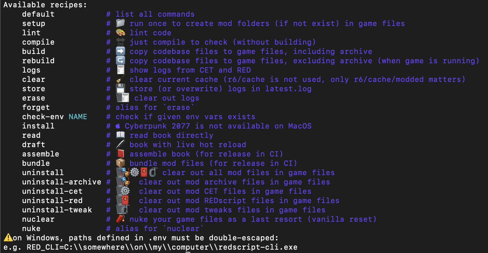
-
generally speaking, while coding you will most likely be interested in the following commands:
-
run once on install, to create folders if missing
just setup -
copy files to game dir before launching game:
just build -
copy files to game dir while game is running (excluding
archive, see below):just rebuild
-
ℹ️ Coding process
- build:
archivecan only be reloaded from Wolvenkit GUI'sHot Reload(RED Hot Tools required) while game is running.tweaks,scriptsandmodscan be just copied over to game files.
- refresh:
- once done, click in CET console:
archivefor WolvenKit archive, TweakXLtweaks, REDscriptscriptsand/or CETreload all mods
- once done, click in CET console:
- remember that depending on your changes reloading a save is necessary, or the game itself sometimes.
📦 mod release files can be found either in Github release or Nexus files alike.
ℹ️ more infos at Github repo.
wiki
First, a handful of reminders / tips.
lua VS reds
Cyber Engine Tweaks (CET) and REDscript both offer access to the game API.
- CET uses .lua files.
- REDscript uses .reds files.
---@param self PlayerPuppet
Observe('PlayerPuppet', 'OnGameAttached', function(self)
-- execute some logic when player starts game
end)
is the equivalent of:
@wrapMethod(PlayerPuppet)
protected cb func OnGameAttached() -> Bool {
// execute some logic when player starts game
wrappedMethod();
}
debug
Since:
- any CET method can be called from in-game CET console
- CET can call any REDscript method
This is how to debug own's code, e.g. :
- create a method on PlayerPuppet in .reds
- launch a game session
- open CET console
quickly call methods
from in-game CET console, e.g.:
GameObject.PlaySoundEvent(Game.GetPlayer(),"q101_sc_03_heart_loop" )
GameObject.StopSoundEvent(Game.GetPlayer(),"q101_sc_03_heart_loop" )
GameObject.BreakReplicatedEffectLoopEvent(Game.GetPlayer(),"q101_sc_03_heart_loop" )
quickly seed inventory with items
Game.AddToInventory("Items.FR3SH", 1)
Game.AddToInventory("Items.BonesMcCoy70V0", 3)
Game.AddToInventory("Items.FirstAidWhiffV0", 10)
Game.AddToInventory("Items.BlackLaceV0", 10)
hot reload
Requires latest CET from Discord, at the moment. Beware of start-up only scripts in your tests: needs to load or start a new game of course. Red Hot Tools can also watch for changes: beware of autosave.
REDscript
default method return values
credits to psiberx on discord.
public static func NoRetInt() -> Int32 {} // returns 0
public static func NoRetCName() -> CName {} // returns n"None"
public static func NoRetStruct() -> SimpleScreenMessage {} // returns empty instance
public static func NoRetArray() -> array<String> {} // returns empty array
conditional compilation
REDscripts functions annotated with @if conditional compilation macros won't be evaluated.
Quickest way to check if it works is to trigger autocompletion on this inside any function.
native status effects
All the status effects can be found there.
native animations
Animations can be handled with WolvenKit.
Change and potentially replace animations.
in-game time vs IRL
1 min in-game is 10 real seconds.
credits to Lyralei on discord.
glossary
PSstands for "persistent state".wrefstands forweak reference(ccRc). it has nothing to do with (im)mutability.IsDefinedis an intrinsic. It is preferable to testing for nullability directly.IsDefined(wref)iswref != null && wref.refCnt > 0IsDefined(ref)isref != null
Cheatsheet
Because I always forget them 😅
Primitives
let v: String = "Hello world";
let v: CName = n"Debuff";
let v: TweakDBID = t"BaseStatusEffect.BlackLaceV0";
let v: ResRef = r"base\\gameplay\\gui\\common\\main_colors.inkstyle";
let v: LocKey = l"MyMod-Setting-Desc";
let v: String = NameToString(n"Debuff");
let v: Bool = IsNameValid(n"Debuff");
let v: TweakDBID = TDBID.None();
let v: TweakDBID = TDBID.Create("Items.BlackLaceV0");
let v: Bool = TDBID.IsValid(t"Items.BlackLaceV0");
let v: Uint64 = TDBID.ToNumber(t"Items.BlackLaceV0");
let v: String = TDBID.ToStringDEBUG(t"Items.BlackLaceV0");
let v: String = ItemID.ToDebugString(someItemID);
let v: Bool = ItemID.IsDefined(someItemID);
let v: TweakDBID = ItemID.GetTDBID(someItemID);
let v: ItemID = ItemID.FromTDBID(t"Items.FirstAidWhiffV0");
let system: ICooldownSystem = Game.ICooldownSystem();
let v: Int32 = system.GetCIDByItemID(someItemID);
let v: Int32 = system.GetCIDByRecord(t"BaseStatusEffect.HealthBooster");
let delay: DelayID = GameInstance.GetDelaySystem(player.GetGame()).DelayCallback();
let defined: Bool = NotEquals(delay, GetInvalidDelayID());
Sounds
Sounds can be played like:
let sound: CName = n"ono_v_effort_short";
GameObject.PlaySoundEvent(this.player, sound);
GameObject.StopSoundEvent(this.player, sound);
Even further controlled with:
let sound: CName = n"ono_v_effort_short";
let event: ref<PlaySoundEvent> = new PlaySoundEvent();
event.soundEvent = sound;
GameObject.PlaySoundEvent(this.player, sound);
// has ESoundStatusEffects
// also has GetSoundName() / SetSoundName()
event.SetStatusEffect(ESoundStatusEffects.DEAFENED);
// later on
GameObject.StopSoundEvent(this.player, event.soundEvent);
Another way:
let sound: CName = n"dry_fire";
let event: ref<AudioEvent> = new AudioEvent();
event.eventName = sound;
this.player.QueueEvent(event);
Icons
Here's a workflow for custom status effects icons which works !
- WolvenKit 8.8.1
- Illustrator 2023
- Photoshop 2023
- InkAtlas Utils 0.6.0
design in Illustrator (optional)
A good way to design in illustrator is to split each icon in a separate artboard, named after the final icon.
Each artboard can contain one or more layers for a single icon design.
- create new document
- 640x512 pixels
- 72 DPI
- create a black background for the whole icons (640x512 pixels) on a "Background" layer
- name each of the layers and their corresponding artboard after its final icon e.g. notably_first_aid_whiff
- create a black background rectangle for each icon (64x64 pixels) to use as placeholder
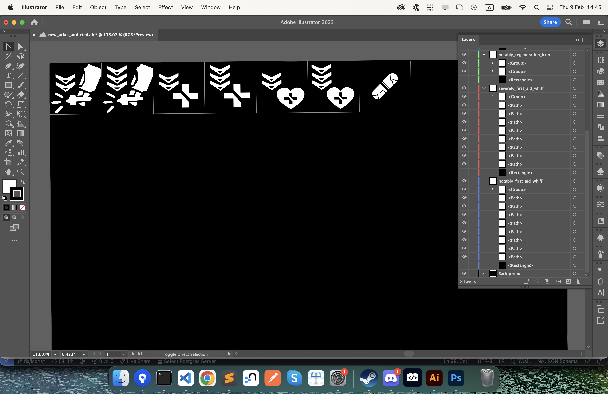
Once happy with your icons:
-
File > Export > Export for Screens
export them e.g. to raw\addicted\gameplay\gui\widgets\healthbar
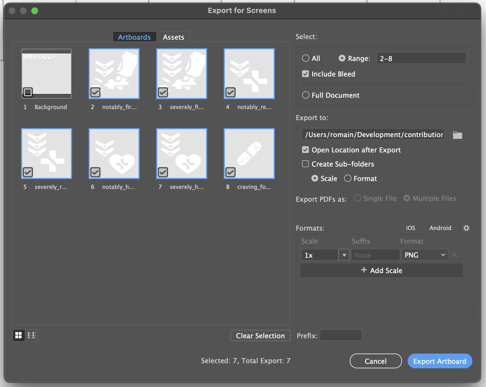
import into Photoshop
If you chose to design on Illustrator:
-
create a new document:
- 640x512 pixels
- 72 DPI
-
create a black background layer "Background" and lock it
-
import and position each of the previously generated PNG icons to your document
-
create as many black backgrounds layers as there are icons, named after the icons
these are placeholders so that Inkatlas Utils plugin generate Part Mapping of 64x64 pixels, inside of the size of the inner icon's graphics
-
group all your icons layers together, and below all the placeholders together
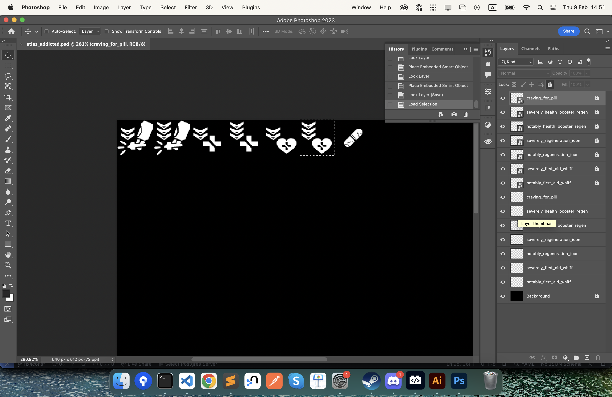
export from Photoshop
⚠️ if you use a Cloud document
- File > Save as Copy > On your computer
- then do the following steps from your local copy, because sometimes cloud sync will leave your document in a wrong state after playing batch actions with the plugin
Then proceed:
- open Inkatlas Utils from Plugins panel
- Export to TGA, e.g.
100: raw\addicted\gameplay\gui\widgets\healthbar\atlas_addicted.xbm50(for 1080p): raw\addicted\gameplay\gui\widgets\healthbar\atlas_addicted_1080p.xbm
- Generate InkAtlas, e.g.
- InkAtlas filename: atlas_addicted
- XBM Depot Path: addicted\gameplay\gui\widgets\healthbar\atlas_addicted.xbm
- XBM Depot Path (1080p): addicted\gameplay\gui\widgets\healthbar\atlas_addicted_1080p.xbm
import in WolvenKit
- launch WolvenKit
-
Tools > Import Tool
-
import both .tga as follow
credits to IslandDancer on Discord
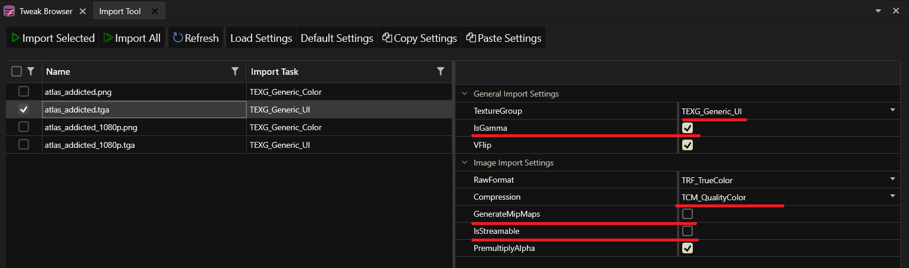
-
-
right click on raw\addicted\gameplay\gui\widgets\healthbar\atlas_addicted.inkatlas.json then Convert from JSON
-
double-check your .inkatlas to make sure everything looks as expected
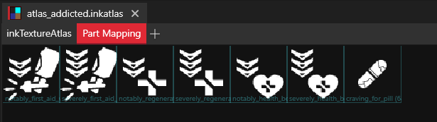
-
Troubleshooting
- in Part mapping, the placeholder only fits my icon, it's definitely smaller than 64x64px: then re-export from Photoshop with InkAtlas Utils plugin, making sure your 64x64 placeholders are not hidden/locked.
- in Part mapping, there's 2 placeholders named after each of my icons: then open your inkatlas in WolvenKit and remove the duplicates in parts : only keep your 64x64 placeholders, these are the ones that matter for dimension purpose.
consume in your mod
- open your IDE
-
edit your YAML Tweak, e.g.
YAMLUIIcon.NotablyWeakenedFirstAidWhiff: $type: UIIcon_Record atlasPartName: notably_first_aid_whiff atlasResourcePath: addicted\gameplay\gui\widgets\healthbar\atlas_addicted.inkatlas -
use in your tweaks, e.g.
YAMLBaseStatusEffect.NotablyWeakenedFirstAidWhiffV0: $base: BaseStatusEffect.FirstAidWhiffV0 uiData: $base: BaseStatusEffect.FirstAidWhiffV0_inline4 iconPath: NotablyWeakenedFirstAidWhiff
-
Enjoy sweet and sharp icons !
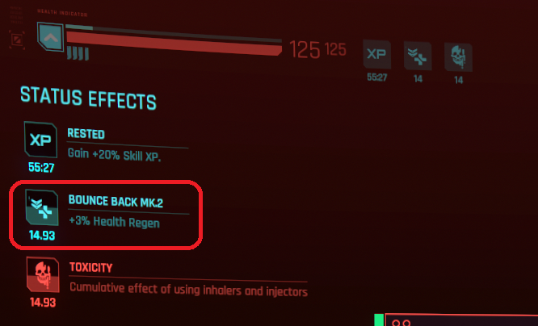
Patterns
The core game system already contains mechanics that can be leveraged to implement features.
System
useful to coordinate whole gameplay.
Persistence
Persistence allow to persist values on game saves.
enum Case {
On,
Off,
}
public class State {
// do not forget to also set persistence on inner fields
public persistent let name: CName;
public persistent let id: TweakDBID;
public persistent let other: Float;
// otherwise it won't get persisted
public let temporary: Bool;
}
public class System extends ScriptableSystem {
private persistent let count: Int32; // any primitive
private persistent let case: Case; // including enums
private persistent let state: ref<State>; // including nested objects
private persistent let formerStates: array<ref<State>>; // including arrays
// but
// no inkHashMap (or similar)
// no String
// no Variant
// no ResRef
}
Requests
Requests are systems' asynchronous mechanism. It's more often than not used to convey an action.
⚠️ be careful that there can only be up to ~128 system requests game-wide, so prefer DelayCallback whenever possible.
credits to psiberx and jekky on discord for finding out about this limitation in memory.
Delayed requests
Requests can also be delayed asynchronously.
public class DoSomethingRequest extends ScriptableSystemRequest {
public let parameter: Float;
}
public class System extends ScriptableSystem {
private func DoSomething() -> Void {
let request: ref<DoSomethingRequest>;
request.parameter = 1.;
let delay = 3.; // in seconds, real time
GameInstance
.GetDelaySystem(this.GetGameInstance())
.DelayScriptableSystemRequest(this.GetClassName(), request, delay, true);
// will automatically call OnDoSomethingRequest on System 3 seconds after
}
// function signature matters !
protected final func OnDoSomethingRequest(request: ref<DoSomethingRequest>) -> Void {
// do something ..
}
}
Regular requests
Requests can be queued directly on a system.
public class DoSomethingRequest extends ScriptableSystemRequest {
public let parameter: Float;
}
public class System extends ScriptableSystem {
private func DoSomething() -> Void {
let request: ref<DoSomethingRequest>;
request.parameter = 1.;
this.QueueRequest(request);
// will automatically call OnDoSomethingRequest on this system
}
// function signature matters !
protected final func OnDoSomethingRequest(request: ref<DoSomethingRequest>) -> Void {
// do something ..
}
}
Callbacks
Callbacks are another asynchronous mechanism.
🆕 2024/01/28: as a side note callbacks scheduled with DelaySystem are only called once, unless manually rescheduled (inside callback's Call method for example). DelayID is an 8-bytes identifier, GetInvalidDelayID() being its smallest value. A different identifier is returned on every call to DelayCallback().
credits to
DJ_Kovrik
public class EdgerunningSystem extends ScriptableSystem {
private func PlaySFXDelayed(name: CName, delay: Float) -> Void {
let callback: ref<PlaySFXCallback> = new PlaySFXCallback();
callback.sfxName = name;
callback.player = GetPlayer(this.GetGameInstance());
GameInstance
.GetDelaySystem(this.GetGameInstance())
.DelayCallback(callback, delay);
}
}
// given the class extends DelayCallback
public class PlaySFXCallback extends DelayCallback {
public let player: wref<PlayerPuppet>;
public let sfxName: CName;
// its method Call will automatically get called
public func Call() -> Void {
GameObject.PlaySoundEvent(this.player, this.sfxName);
LogChannel(n"DEBUG", s"Run \(this.sfxName) sfx");
}
}
Events
Events are another asynchronous mechanism. It's more often than not used to notify other parts of the code.
Tickable events
Tickable events are events whose progression can be tracked.
Only work on Entity, so usually PlayerPuppet.
The benefit of TickableEvent is that you get its state and progress available.
During my own experiments, I wasn't able to call it on a custom class which extends
Entity.
// define your event
public class ProgressionEvent extends TickableEvent {}
public class System extends ScriptableSystem {
private let player: wref<PlayerPuppet>;
private final func OnPlayerAttach(request: ref<PlayerAttachRequest>) -> Void {
let player: ref<PlayerPuppet> = GetPlayer(this.GetGameInstance());
if IsDefined(player) {
LogChannel(n"DEBUG", s"initialize system on player attach");
this.player = player;
let evt: ref<ProgressionEvent> = new ProgressionEvent();
// tick repeatedly for 3 seconds
GameInstance.GetDelaySystem(this.player.GetGame()).TickOnEvent(this.player, evt, 3.);
} else { LogError(s"no player found!"); }
}
}
// this method will get called repeatedly on each tick
// for the duration of the event or until canceled.
// signature of the function matters !
@addMethod(PlayerPuppet)
protected cb func OnProgressionEvent(evt: ref<ProgressionEvent>) -> Bool {
// do something ..
}
Delayed events
Regular events can be delayed asynchronously too.
credits to
Lyraleion Discord.
@addField(PlayerPuppet)
public let m_EventDelayID: ref<DelayID>; // Id the game creates for us. This is necessary for eventually cancelling your event if you ever have to.
public class YourEventClassName extends Event
{
// Can be empty, but if you need it to save any data to use later in your "handling" function, make sure to add the necessary variables here.
public let player: ref<PlayerPuppet>;
}
// Setup Event. Has to be in the class that is the owner.
@addMethod(PlayerPuppet)
public final func SetupEvent(delay: Float) -> Void {
let evt: ref<YourEventClassName > = new YourEventClassName();
// Example on how to set your variable data
evt.player = this;
this.m_EventDelayID = GameInstance.GetDelaySystem(this.GetGame()).DelayEvent(this, evt, delay, false);
}
// As soon as V is entered the world, we want to start the event.
@wrapMethod(PlayerPuppet)
protected cb func OnGameAttached() -> Bool {
wrappedMethod();
if !this.IsReplacer() {
this.SetupEvent(5.00); // 5.00 == 5 real life seconds. 1 min in-game is 10 real seconds.
}
}
// Has to be added to the main class that is the owner. Format of the function is important! This is how we call our handling function:
@addMethod(PlayerPuppet)
protected cb func OnHandlingEvent(evt: ref<YourEventClassName >) -> Void {
LogChannel(n"DEBUG", "Running Event now!");
}
Regular events
credits to
Lyraleion Discord.
Here QueueEvent generally means it's gonna be played as soon as possible.
public class YourEventClassName extends Event
{
// Can be empty, but if you need it to save any data to use later in your "handling" function, make sure to add the necessary variables here.
public let player: ref<PlayerPuppet>;
}
// Setup Event. Has to be in the class that is the owner.
@addMethod(PlayerPuppet)
public final func DoEvent() -> Void {
let evt: ref<YourEventClassName > = new YourEventClassName();
this.QueueEvent(evt);
}
// As soon as V is entered the world, we want to start the event.
@wrapMethod(PlayerPuppet)
protected cb func OnGameAttached() -> Bool {
wrappedMethod();
if !this.IsReplacer() {
this.DoEvent();
}
}
event inherited from RED Event
see cyberdoc
public native class GameObject extends GameEntity {
// certain event will automatically trigger a method with this exact signature
// vvvvvvvvvvvv
protected cb func OnHit(evt: ref<gameHitEvent>) -> Bool {
this.SetScannerDirty(true);
this.ProcessDamagePipeline(evt);
}
}
credits to psiberx
Blackboards
Blackboards act as global variables. Other parts of the code can get, set or listen to blackboard definitions to be notified of changes.
used in: effectors, components, prereq state, systems, ink game controllers, managers..
in prereq state it seems like registering/unregistering is automatically handled by engine
public class Manager extends IScriptable {
private let listener: ref<CallbackHandle>;
// register to the changes first
private final func PlayerAttachedCallback(playerPuppet: ref<GameObject>) -> Void {
let board: ref<IBlackboard> = GameInstance
.GetBlackboardSystem(playerPuppet.GetGame());
this.listener = board.RegisterListenerBool(GetAllBlackboardDefs().UIGameData.Popup_IsModal, this, n"OnPopupModalChanged");
}
// don't forget to unregister when finished
private final func PlayerDetachedCallback(playerPuppet: ref<GameObject>) -> Void {
let board: ref<IBlackboard> = GameInstance
.GetBlackboardSystem(playerPuppet.GetGame());
board.UnregisterListenerBool(GetAllBlackboardDefs().UIGameData.Popup_IsModal, this.listener);
}
// changes to the listened blackboard variable will trigger
protected cb func OnPopupModalChanged(value: Bool) -> Bool {
// do something..
}
}
Listeners
A listener, as its name suggests, allows to listen for changes.
There's different kinds of listeners, for example a ScriptStatsListener allows to listen for changes on stats, namely BaseStats in the code. The game contains numerous stats, let's look at an example.
Detoxifier (a.k.a ToxinCleanser) grants the following stats:
gamedataStatType.PoisonImmunitygamedataStatType.HasPoisonImmunity
Note: gamedataStatType is used in TweakDB with BaseStats, this can be observed in RPGManager in the sources.
Another example from the sources with gamedataStatType.AutoReveal:
public class AutoRevealStatListener extends ScriptStatsListener {
public let m_owner: wref<GameObject>;
public func OnStatChanged(ownerID: StatsObjectID, statType: gamedataStatType, diff: Float, total: Float) -> Void {
let updateRequest: ref<UpdateAutoRevealStatEvent>;
if Equals(statType, gamedataStatType.AutoReveal) && IsDefined(this.m_owner as PlayerPuppet) {
updateRequest = new UpdateAutoRevealStatEvent();
updateRequest.hasAutoReveal = total > 0.00;
this.m_owner.QueueEvent(updateRequest);
};
}
}
public class UpdateAutoRevealStatEvent extends Event {
public let hasAutoReveal: Bool;
}
public class PlayerPuppet extends ScriptedPuppet {
protected cb func OnUpdateAutoRevealStatEvent(evt: ref<UpdateAutoRevealStatEvent>) -> Bool {
// do something ...
}
protected final func RegisterStatListeners(self: ref<PlayerPuppet>) -> Void {
let statsSystem: ref<StatsSystem> = GameInstance.GetStatsSystem(this.GetGame());
let statPoolsSystem: ref<StatPoolsSystem> = GameInstance.GetStatPoolsSystem(this.GetGame());
let entityID: EntityID = this.GetEntityID();
this.m_autoRevealListener = new AutoRevealStatListener();
this.m_autoRevealListener.SetStatType(gamedataStatType.AutoReveal);
this.m_autoRevealListener.m_owner = self;
statsSystem.RegisterListener(Cast<StatsObjectID>(entityID), this.m_autoRevealListener);
}
protected final func UnregisterStatListeners(self: ref<PlayerPuppet>) -> Void {
let statsSystem: ref<StatsSystem> = GameInstance.GetStatsSystem(this.GetGame());
let statPoolsSystem: ref<StatPoolsSystem> = GameInstance.GetStatPoolsSystem(this.GetGame());
let entityID: EntityID = this.GetEntityID();
statsSystem.UnregisterListener(Cast<StatsObjectID>(entityID), this.m_autoRevealListener);
this.m_autoRevealListener = null;
}
}
There are different kinds of listeners:
ScriptStatsListener➡️BaseStatsScriptStatPoolsListener➡️BaseStatPools- ...
Tasks
Tasks can be used in conjunction with DelaySystem and allows for more granular control on when it gets processed (see gameScriptTaskExecutionStage).
public class EnableTaskData extends ScriptTaskData {
public let enabled: Bool;
}
public class System extends ScriptableSystem {
protected final func Enable(enabled: Bool) -> Void {
let data: ref<EnableTaskData> = new EnableTaskData();
data.enabled = enabled;
GameInstance.GetDelaySystem(this.GetGameInstance()).QueueTask(this, data, n"OnEnable", gameScriptTaskExecutionStage.Any);
}
// function signature matters!
protected final func OnEnable(data: ref<ScriptTaskData>) -> Void {
let task: ref<EnableTaskData> = data as EnableTaskData;
if !IsDefined(task) {
return;
};
// do something ..
}
}
Effectors
Or simply put, adding custom logic at runtime to statically defined status effects.
Looking at BaseStatusEffect.BerserkPlayer in WolvenKit,
in its 2nd packages then down in its effectors'' first entry,
there's a BaseStatusEffect.BerserkPlayerSFXEffector whose effectorClassName is PlaySFXEffector.
Looking into game sources, there's indeed a PlaySFXEffector (which extends Effector/IScriptable),
which allows for tweaking e.g. the effect at runtime based on conditions:
public class PlaySFXEffector extends Effector {
// ...
protected func ActionOn(owner: ref<GameObject>) -> Void {
this.m_owner = owner;
if !this.m_startOnUninitialize && IsNameValid(this.activationSFXName) {
if !this.m_unique {
GameObject.PlaySound(this.m_owner, this.activationSFXName, n"PlaySFXEffector");
} else {
GameObject.PlaySoundWithParams(this.m_owner, this.activationSFXName, n"PlaySFXEffector", audioAudioEventFlags.Unique);
};
};
}
}
Here's another example with similarly designed status effect, ElectrocutedSFX, in WolvenKit:
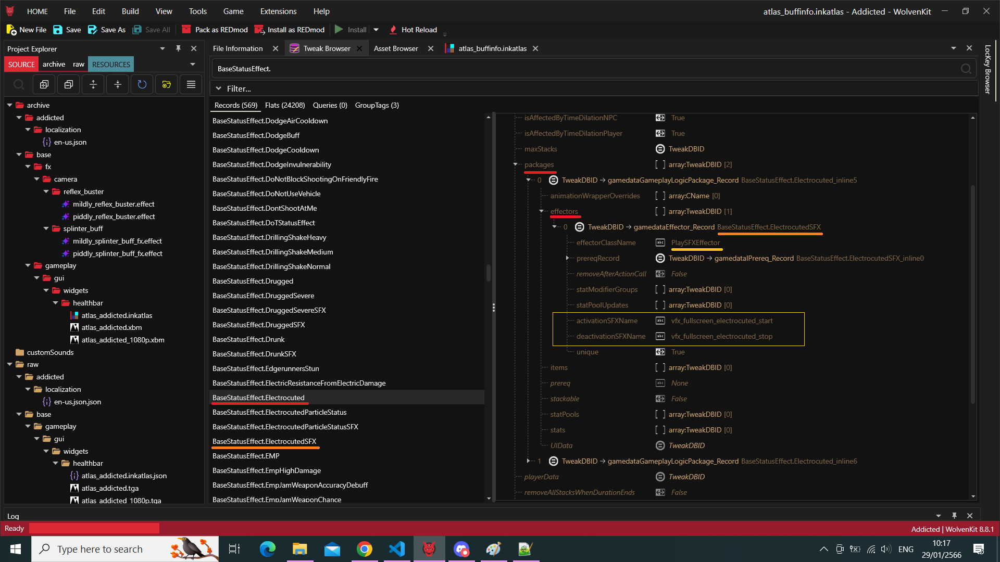
Some experiments can be found in the travelog entry from 2023-02-10.
Scriptables
IScriptable is actually the parent class of most classes, including the ones used in the previous patterns.
Useful to delegate code, e.g. mechanics with Blackboard interactions:
public class Controller extends IScriptable {
private let owner: wref<GameObject>;
private let delay: DelayID;
private let definition: ref<BlackboardDefinition>;
private let listener: ref<CallbackHandle>;
private let sticker: BlackboardID_Int;
private final func RegisterBlackboardListeners() -> Void {
let bb: ref<IBlackboard>;
let system: ref<BlackboardSystem>;
if this.m_owner != null {
system = GameInstance.GetBlackboardSystem(this.m_owner.GetGame());
};
if system != null {
bb = system.GetLocalInstanced(this.m_owner.GetEntityID(), this.definition);
if bb != null {
// by registering to board for updates and specifying the method name
this.listener = bb.RegisterListenerInt(this.sticker, this, n"OnStickerChanged");
};
};
}
// it will automatically call
private final func OnStickerChanged(value: Int32) -> Void
{}
// of course one need to take care of unregistering too
public final func RegisterOwner(owner: ref<GameObject>) -> Void {}
public final func UnregisterOwner() -> Void {}
}
public class PlayerPuppet extends ScriptedPuppet {
private let controller: ref<Controller>;
private final func PlayerAttachedCallback(playerPuppet: ref<GameObject>) -> Void {
// here controller can be attached (register)
}
private final func PlayerDetachedCallback(playerPuppet: ref<GameObject>) -> Void {
// here controller can be detached (unregister/cleanup)
}
}
Troubleshooting
clean cache
credits to dddzzzkkk on Discord:
basically to fix your issue i think you have to delete the files in the r6\cache\modded folder, delete r6\cache\final.redscripts, rename r6\cache\final.redscripts.bk to r6\cache\final.redscripts, redeploy your REDmods, THEN launch the game
Press [None] to continue
credits to DJ_Korvrik : reinstall your Input Loader or delete Cyberpunk 2077\engine\config\platform\pc\input_loader.ini.
"anchor" variables
one cannot e.g.
public func GetIDs() -> array<TweakDBID> { ... }
// ❌ WRONG!
public func IsID(id: TweakDBID) -> Bool {
return ArrayContains(GetIDs(), id);
}
// ✅ do this instead:
public func IsID(id: TweakDBID) -> Bool {
let ids = GetIDs();
return ArrayContains(ids, id);
}
handling time conversions
The game already has GameTime (the time for V), GameTimeStamp() -> Float (the real time), plus EngineTime (?) and SimTime (?).
There's apparently some issue with the method TimeSystem.RealTimeSecondsToGameTime(), unless I wasn't using the right unit of time.
Mod mechanics
The following description details every feature of this mod, which will ruin any surprise intended to be discovered and enjoyed by the player.
This is only for people who can't stand playing a mod without knowing each of their internal gameplay mechanics. 🫣
You've been warned !
Please note the gameplay below might evolve over time, as more content get released.
Since it has to be manually maintained and it can happen that I forgot to do it (I'm a mere human after all choom's, not some methodic borg), please let me know in the Github issues if ever something is outdated.
Systems
This mod add the following gameplay systems to the game.
Addiction
The way addiction is being kept track of is the following:
- whenever V consumes an addictive consumables (see which ones below), his/her addiction to this specific consumable increases (you can think of it as a jauge).
- whenever V rests at home for long enough, gets refreshed, his/her addictions jauges decrease.
- mild drugs decreases twice as fast as they increase.
- hard drugs increases twice as fast as they decrease.
Addiction jauge has the following thresholds:
Clean(never consumed, or withdrawn from for long enough)Barely(consumed a couple of times)Mildly(consumed frequently, but not too much)Notably(consumed on a regular basis, or the substance is very addictive in itself)Severely(consumed for way too long)
V is considered seriously addict whenever (s)he reaches notable or severe thresholds.
Of course (s)he can perfectly withdraw from consuming the addictive substance and, if long enough, his/her threshold will decrease back.
🆕 >= v1.0.0
-
Consumables addictive potency now increases on subsequent consumption(s) the same day. (thanks Phoenicia)
which means, the more you consume daily the faster it increases.
-
Consumables addictive resilience now increases when severing consumption for multiple subsequent days. (thanks Phoenicia)
which means, the longer you prevent from consuming the faster it weans off.
-
Compatible with Survival System: being overly stressed prevents addiction from weaning off when sleeping.
Addictive consumables
Symptoms
The player will get hints from V whenever (s)he gets seriously addict:
- inhalers will make V cough, slightly after inhaling.
- injectors will make V feel pain, once their effect wears off.
- pills will have a specific effect on consumption, depending on their kind:
- anabolics (Stamina Booster, Carry Capacity Booster) will make V grunts.
- neuro transmitter (RAM Jolt) will make V experience migraine.
🆕 >= beta-0.13.0
These hints slightly increase foes' audio stim range while playing, making V more likely to be detected.
Families
Consumables are grouped by family, which gets their own gameplay mechanics.
Healers
- consumables: MaxDOC, BounceBack and Health Booster.
- healers are considered as mild drugs.
Whenever V becomes notably addict to any healer, the benefits of the consumables decrease. If (s)he is severely addict, the benefits gets even more lessened.
e.g. if MaxDOC usually instantly restores 40% health, whenever notably addict it will only restore 30%, or 20% if severely addict. For some healers, it also lasts shorter.
The status effects of these consumables will also have their UI in radial wheel updated accordingly, with their own custom icon.
🆕 >= beta-0.13.0
- V will start consuming healers faster when reaching severe addiction threshold.
Stimulants
- consumables: RAM Jolt, Stamina Booster and Carry Capacity Booster.
- stimulants are considered as mild drugs.
Whenever V becomes notably addict to a booster (each being treated separately) and (s)he hasn't consumed any for a certain duration, (s)he gets a debuff equals to what the consumable originally grants.
e.g. if RAM Jolt increases max RAM units by 2, whenever V is withdrawing (s)he is at 90% memory if notably addict, or 70% memory if severely addict until (s)he consumes some again.
Craving for a stimulant will also be shown in radial wheel with custom icon.
🆕 >= beta-0.13.0
- RAM Jolt can also cause Photosensitivity when severely withdrawn, which make impairing blinding effects (e.g. flash grenades) last longer.
🆕 >= v1.0.0
- Stamina Booster can also cause Lesions, which make force-opening any door or hard-landing cause damages.
Black Lace
Black Lace has always been an iconic drug in Cyberpunk lore, hence why it gets its own system.
Black Lace is considered as a hard drug.
Whenever V becomes notably or severely addict to Black Lace, and (s)he hasn't consumed any for a certain duration (s)he is susceptible to Fibromalgya, a custom status effect which decreases his/her REF
e.g. when experiencing Fibromalgya, V's REF decreases to 90% if notably addict or 70% if severely addict, until (s)he consumes some again.
When suffering from Fibromalgya, V will also express some pain.
Craving for Black Lace will also be shown in radial wheel with custom icon.
Alcohols
Alcohols are considered hard drug.
🆕 >= beta-0.13.0
Whenever V becomes notably or severely alcoholic (s)he can be subject to Jitters, greatly impairing his/her ability at aiming with ranged weapons.
Compatible with Idle Anywhere and Immersive Bartenders.
Cigars and cigarettes
🆕 >= beta-0.13.0
Whenever V becomes notably or severely addict to tobacco (s)he can be subject:
- Short breath (notably addict): delays + reduces Stamina regeneration, and consumes Stamina while sprinting.
- Breathless (severely addict): delays + reduces Stamina regeneration, and consumes Stamina both while sprinting and dodging.
Compatible with Idle Anywhere.
🆕 >= beta-0.9.0
Additional mechanisms now exists to account for players using Wannabe Edgerunner mod together.
Insanity
Whenever addicted to Black Lace, V can suffer an additional Humanity penalty, called Insanity.
Penalty is calculated from max number of consecutive consumptions, along with addiction threshold.
Neuroblockers
Neuroblockers addiction works a little bit like Healers, except that it weakens their duration. In short: the more you're addicted to Neuroblockers, the shorter they last.
The status effects of these consumables will also have their UI in radial wheel updated accordingly, with their own custom icon.
🆕 >= v1.0.0
- Neuroblockers usage is contraindicated with neuro-stimuli intensive cyberwares like ExDisk and BioConductor, as it tends to accelerate the addiction process.
Cyberware
Some cyberwares also have an impact on addiction in general.
Detoxifier
This item makes V's addictions decrease drastically more whenever getting a proper rest.
e.g. whenever equipped with Detoxifier and properly resting at house, V sees his/her addiction decrease twice as fast (cumulable with Metabolic Editor).
⚠️ >= CDPR patches 2.0+ apparently removed Detoxifier so gameplay mechanics might be obsolete, unless used with SynthDose?
This benefit is kept hidden from the player to discover.
Metabolic Editor
This item makes V's addictions decrease drastically more whenever getting a proper rest.
e.g. whenever equipped with Metabolic Editor and properly resting at house, V sees his/her addiction decrease thrice as fast (cumulable with Detoxifier).
This benefit is kept hidden from the player to discover.
⚠️ >= CDPR patches 2.0+ apparently removed Metabolic Editor so gameplay mechanics might be obsolete, unless used with Pre 2.0 Legendary Cyberware Collection?
Biomonitor
This item will warn V whenever crossing a serious thresholds.
e.g. a little animation will play on-screen with the Biomonitor warning V about his/her current condition.
The UI is also dismissable, and automatically hides whenever interacting with another interaction UI in the game.


Drug Pump
🆕 >= v1.0.0
A secret piece of cyberware called Drug Pump is available to find in-game.
This street-modified blood pump accelerates its possessor's healing while spiking their bloodstream with Black Lace. The injection has a tier-based percentage chance to consume the item.
(thanks Demon9ne)
Voiced reactions
🆕 >= beta-0.8.0
Now V will sometimes have voiced reactions, for English language only (it will have no effect for people playing in another language yet).
Examples:
- whenever biomonitor boots many times.
- whenever biomonitor reports serious condition multiple times.
- whenever biomonitor is dismissed during combat.
Some of these voiced reactions are unique.
Requires Audioware.
Caution notices
🆕 >= v1.0.0
Consumable tooltips in backpack now display caution notices from their manufacturer regarding their responsible usage.
Travelog
A little travel blog in modding land.
- 2023-01-21: cyberware research / lore research for general gameplay mechanics
- 2023-01-22: VFX research / tweak loading order
- 2023-01-24: status effects icons research
- 2023-01-25: status effects icons research follow-up
- 2023-01-27: bitwise experimentations
- 2023-01-29: Redscript syntax clarifications
- 2023-01-30: UI research / various
- 2023-01-31: UI research follow-up
- 2023-02-03: tweaking ink widget & anim research
- 2023-02-04: ink controller and ink mask
- 2023-02-06: lore research for black lace gameplay mechanics
- 2023-02-07: radial wheel research
- 2023-02-10: interactions and sounds
- 2023-03-17: AI powered dialogs research
- 2023-03-31: custom sounds
- 2023-04-07: how to translate this mod ?
2023/01/21
cyberware research
-
PlaySFXEffector-> heart beat (deactivation: heart beat rev) : but bound to status effect or manually playable ? -
make the onomotopea happens less often if too frequent ?
-
what about dexotifier ? -> immune to withdrawal symptoms ! boost resilience ? (2?)
main trait of this item is immunity
Items.ToxinCleanser -
what about metabolic editor ? -> boost resilience ! (4?) immune ? regenerate health on symptoms ?
main trait of this is regeneration
Items.ReverseMetabolicEnhancer -
healers weakened potency:
- if one can
@wrapMethodoverclass StatPoolEffector's then maybe the penalty for healers can be applied directly there. another long-told alternative would be a custom status effect but SFX should still be handled separately byAudioManager.
- if one can
-
inventing custom VFX: there's an
ApplyShaderOnObjectEffector! -
playing VFX without SFX:
- looking at splinter_buff_fx.effect in Wolvenkit's Asset browser, it appears that it contains an
itemTrackItemSoundineventswitheventNameset tovfx_fullscreen_splinter_buff. finding a way to disable/remove it would probably allows for playing VFX without associated SFX. - looking at older code, there's also:
RedscriptGameObjectEffectHelper.StartEffectEvent(this, n"status_drunk_level_3"); GameObject.SetAudioParameter(this, n"vfx_fullscreen_drunk_level", 3.00);and for
splinter_debuffthere'svfx_fullscreen_splinter_buff. - looking at splinter_buff_fx.effect in Wolvenkit's Asset browser, it appears that it contains an
bibliography
Cyberpunk 2077 wiki
The Immune System has 2 slots that can be used to implant a cyberware for V.
Health Direct
Addiction withdrawal symptoms | healthdirect
a residential detox unit or in a hospital; at home. Detoxing or withdrawing without support can lead to relapse. It can also be dangerous to your health.
Drug withdrawal
Drug withdrawal, drug withdrawal syndrome, or substance withdrawal syndrome,[1] is the group of symptoms that occur upon the abrupt discontinuation or decrease in the intake of pharmaceutical or recreational drugs.
In order for the symptoms of withdrawal to occur, one must have first developed a form of drug dependence. This may occur as physical dependence, psychological dependence or both. Drug dependence develops from consuming one or more substances over a period of time.
Dependence arises in a dose-dependent manner and produces withdrawal symptoms that vary with the type of drug that is consumed. For example, prolonged use of an antidepressant medication is likely to cause a rather different reaction when discontinued compared to discontinuation of an opioid, such as heroin. Withdrawal symptoms from opiates include anxiety, sweating, vomiting, and diarrhea. Alcohol withdrawal symptoms include irritability, fatigue, shaking, sweating, and nausea. Withdrawal from nicotine can cause irritability, fatigue, insomnia, headache, and difficulty concentrating. Many prescription and legal nonprescription substances can also cause withdrawal symptoms when individuals stop consuming them, even if they were taken as directed by a physician.
The route of administration, whether intravenous, intramuscular, oral or otherwise, can also play a role in determining the severity of withdrawal symptoms. There are different stages of withdrawal as well; generally, a person will start to feel bad (crash or come down), progress to feeling worse, hit a plateau, and then the symptoms begin to dissipate. However, withdrawal from certain drugs (barbiturates, benzodiazepines, alcohol, glucocorticoids) can be fatal. While it is seldom fatal to the user, withdrawal from opiates (and some other drugs) can cause miscarriage, due to fetal withdrawal. The term "cold turkey" is used to describe the sudden cessation of use of a substance and the ensuing physiologic manifestations.
Wikipedia
What are 3 important functions of the liver?
The liver is an essential organ of the body that performs over 500 vital functions. These include removing waste products and foreign substances from the bloodstream, regulating blood sugar levels, and creating essential nutrients.
2023/01/22
VFX research
So how to take existing VFX in the game, tweak them, and use them !
The experiment made today is to take e.g. splinter_buff existing effect (the one played when inhaling a MaxDOC, a.k.a FirstAidWhiff), remove the inhaling SFX and see if it's possible.
And it does:
- WolvenKit Asset browser : e.g. base\characters\entities\player\player_wa_fpp.ent
components:fx_status_effect: e.g. dizzy, drunk, stunned, etcfx_player: e.g. swimming, johnny sickness, eyes closing, locomotion, etc + splinter_buff !
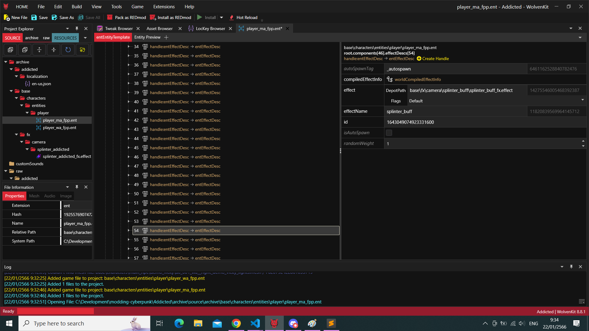
then:
- WolvenKit :
- open splinter_buff.effect in project
- rename it e.g. splinter_addicted.effect
- move it e.g. fx\camera\splinter_addicted\splinter_addicted.effect
- open base\characters\entities\player\player_wa_fpp.ent in project
-
add a new entry under components.fx_player.effectDescs
-
fill the previously created file info and effectName desired in RED you can then call it with e.g.
RedscriptGameObjectEffectHelper.StartEffectEvent(this, n"splinter_addicted");even create e.g. a YAML tweak
YAMLBaseStatusEffect.SplinterAddicted: $base: BaseStatusEffect.FirstAidWhiffV0 packages: [] VFX: - $type: StatusEffectFX_Record name: splinter_addicted shouldReapply: truethen call it with e.g.
RedscriptGameInstance .GetStatusEffectSystem(this.GetGame()) .ApplyStatusEffect(this.GetEntityID(), t"BaseStatusEffect.SplinterAddicted", this.GetRecordID(), this.GetEntityID());
-
- open splinter_buff.effect in project
tweaks loading order
psiberx — 09/11/2022 3:08 PM yeah, the only things that can be already present are cet early mods and other yaml mods the load order for all tools:
- base tweakdb (original or redmodded)
- cet mods using onTweak (afaik rarely used)
- yaml tweaks (alphabetical order)
- redscript tweaks
- cet mods using onInit (most existing mods)
also the best method is to not touch e.g. base\characters\entities\player\player_wa_fpp.ent at all since other mod(s) could override it, but instead use keanu's trick which can be found in "Immersive Glasses":
local effects = GetPlayer():FindComponentByName("fx_player").effectDescs
CName.new(effectName);
local custom = entEffectDesc.new();
custom.effectName = "splinter_addicted";
custom.effect = "base\\fx\\camera\\splinter_buff\\splinter_addicted_fx.effect";
GetPlayer():FindComponentByName("fx_player").effectDescs = effects
and indeed it works to have a BaseStatusEffect.SplinterAddicted defined in YAML tweaks (e.g. tweaks/Addicted/healer.yml) whose splinter_addicted effect is defined in CET (e.g. mods/Addicted/init.lua).
Thanks to :
- psiberx
- Hróbjartur Fóðarsson
- Sürr
- Simarilius
2023/01/24
Status effects icons research
So after having literally flatlined my install once again, here we are:
gathering notes first ...
I was recommended the WolvenKit guid on Adding new items.
Probably need to be extra careful on hooking up the inkatlas.
There's also a notable entry in TweakXL item icons.
psiberx on discord:
@wrapMethod(buffListItemLogicController)
public final func SetData(icon: CName, time: Float) -> Void {
wrappedMethod(icon, time);
if Equals(icon, n"first_aid_whiff") {
inkImageRef.SetAtlasResource(this.m_icon, r"base\\gameplay\\gui\\widgets\\healthbar\\atlas_buffinfo.inkatlas");
inkImageRef.SetTexturePart(this.m_icon, n"first_aid_whiff");
};
}
but it was also stated elsewhere:
HUDWeaponIcons.Satara:
$type: UIIcon # UIIcon_Record ?
atlasPartName: 27_Rostovic_DB_2_Satara
atlasResourcePath: base\gameplay\gui\widgets\ammo_counter\atlas_ammo_counter.inkatlas
Other interesting things spotted along the way
custom central HUD
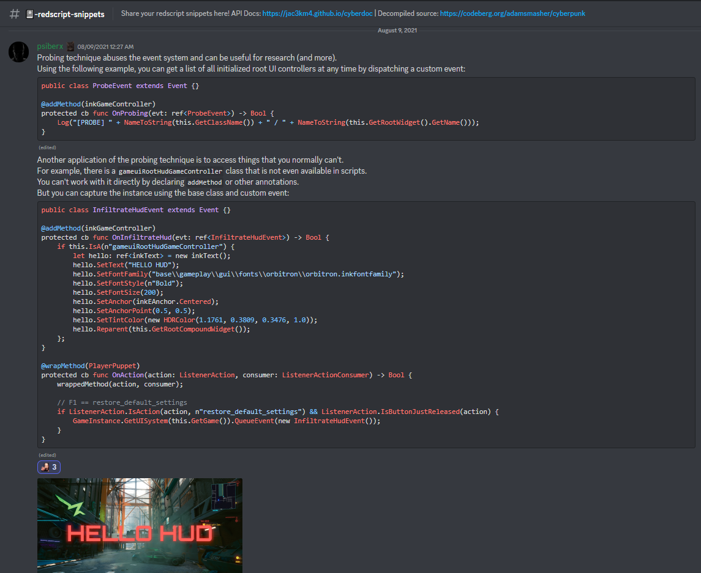
Credits
- Paperclip
- psiberx
Troubleshooting
Size
- original size: 640x512
- 1080p: 320x256
- 720p: 216x152
note:
- width 1080p -> 720p:
320 / 80 * 54 = 216(not the same ratio) - height 1080p -> 720p:
256 / 64 * 38 = 152(not the same ratio)
based on width:
- 216/8 = 27
- 640/8 = 80
- 27/80 = 0.3375
- 640*0.3375 = 216
- or 640/100*33.75
2023/01/25
Status effects icons research follow-up
Tooling update
So it turns out I had to fork and modify InkAtlas Utils.
The JSON format for the .inkatlas file, a.k.a WKitJsonVersion has changed (now in 0.0.3).
Also, as a side note:
-
the TGA gets flipped while it doesn't seem to be the case in WolvenKit anymore.
just manually flip it vertically in Photoshop
-
the
atlasPartNamenormalizing function doesn't replace the-with_as assumed.just manually search and replace the atlasPartName in IDE
-
the
ArchiveFileNameisn't set in theHeader.just copy/paste absolute location of the .inkatlas file ?
More troubleshooting
Given a repo like this: 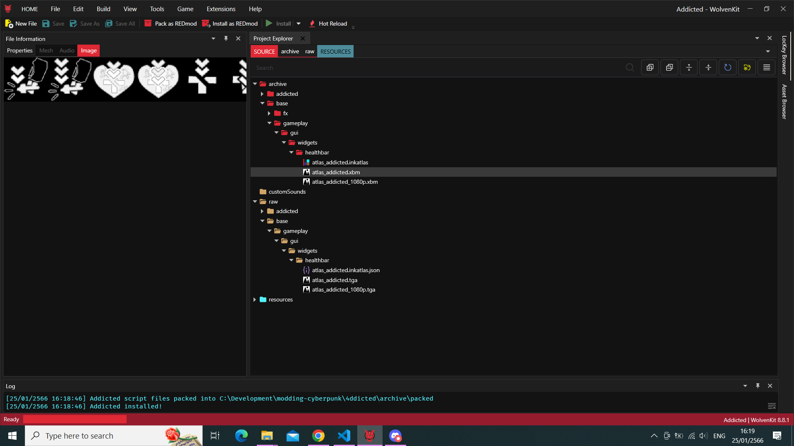
Also, in TweakXL here's how to correctly define it:
UIIcon.NotablyWeakenedFirstAidWhiff:
$type: UIIcon_Record
atlasPartName: notably_first_aid_whiff
atlasResourcePath: base\gameplay\gui\widgets\healthbar\atlas_addicted.inkatlas
BaseStatusEffect.NotablyWeakenedFirstAidWhiffV0:
$base: BaseStatusEffect.FirstAidWhiffV0
uiData:
$base: BaseStatusEffect.FirstAidWhiffV0_inline4
iconPath: NotablyWeakenedFirstAidWhiff
Thanks to psiberx once again, I completely missed this.
2023-01-27
Bitwise experimentations
Since I'll have to keep track of consumables withdrawal symptoms, I'd rather check if I can use some bitwise operation.
Point is, there's 9 different consumables in core game + 23 additional provided by mod WE3D - Drugs of Night City.
Which is actually ideal for storing booleans as bits in Int32.
Here's a sample made quickly on Rust playground, by restricting the usage of bitwise operators to those provided by REDscript.
Applied to REDscript, it should roughly translate to this:
// use enum's variants value as the position in bits inside blackboard's Int32
enum Consumable {
Invalid = -1,
Alcohol = 0,
MaxDOC = 1, // FirstAidWhiff
BounceBack = 2, // BonesMcCoy
HealthBooster = 3,
MemoryBooster = 4,
OxyBooster = 5,
StaminaBooster = 6,
BlackLace = 7,
// so on and so forth ...
}
@addField(PlayerStateMachineDef)
public let IsWithdrawing: BlackboardID_Int; // this bad boy will contains all consumables withdrawal symptom bool, one for each bit
@addMethod(PlayerPuppet)
public func IsWithdrawing(consumable: Consumable) -> Bool {
if Equals(EnumInt(consumable), EnumInt(Consumable.Invalid)) { return false; }
let blackboard: ref<IBlackboard> = this.GetPlayerStateMachineBlackboard();
let symptoms = blackboard.GetInt(GetAllBlackboardDefs().PlayerStateMachine.IsWithdrawing);
// get value for nth bit, where n is the consumable value (see enum above)
return (symptoms >> EnumInt(consumable)) & 1;
}
public class AddictedSystem extends ScriptableSystem {
private let player: wref<PlayerPuppet>;
// ...
public func SetSymptom(consumable: Consumable, withdrawing: bool) -> Void {
if Equals(EnumInt(consumable), EnumInt(Consumable.Invalid)) { return; }
let blackboard: ref<IBlackboard> = this.player.GetPlayerStateMachineBlackboard();
let before = blackboard.GetInt(GetAllBlackboardDefs().PlayerStateMachine.IsWithdrawing);
let after = before;
if withdrawing {
// set bit to 1
after |= 1 << flag;
} else {
// set bit to 0
after &= ~(1 << flag);
}
if NotEquals(before, after) {
blackboard.SetInt(GetAllBlackboardDefs().PlayerStateMachine.IsWithdrawing, after);
}
}
}
But... wait ! This wouldn't compile, since maybe left shift << and right shift >> might not be supported in REDscript operators.
Well, so we're gonna have to do the calculation manually: for example a >> b is equivalent to dividing a by 2 ^ b.
So let's also look at Blackboard supported types.
oh... turns out there's a BlackboardID_Uint and BlackboardID_Int ^^
- u32, see Rust playground
- i32, see Rust playground
- u64, on latest Rust playground
But why look into Rust ? Because Rust and REDscript share inherited similarities (REDscript is built using Rust), and testing in the Rust playground is a bliss, no need to even launch the game !
Well, so here it is, implementing bit flags for BlackboardID_Int:
public func ShiftRight(num: Int32, n: Int32) -> Int32 {
num / PowI(2, n)
}
public func ShiftLeft(num: Int32, n: Int32) -> Int32 {
num * PowI(2, n)
}
public func PowI(num: Int32, times: Int32) -> Int32 {
RoundMath(Cast<Float>(num).PowF(times))
}
public func Invert(num: Int32) -> Int32 {
let i = 0;
while i < 32 {
num = PowI(num, ShiftLeft(1, i));
i += 1;
}
return num;
}
So we would get something like:
Get the nth flag:
return ShiftRight(symptoms, EnumInt(consumable)) & 1;
Set the nth flag:
let after = before; // value from the blackboard
if withdrawing {
// set bit to 1
after |= ShiftLeft(1, flag);
} else {
// set bit to 0
after &= Invert(ShiftLeft(1, flag));
}
🆕 2023/03/31: Codeware now allows it natively.
2023-01-27
RED keywords clarifications
Asked on Discord about const:
credits to Technic235
finalmeans the function cannot be altered any moreconstmeans function and/or argument/parameter cannot EVER be altered and will always be the same, but you can obviously set its initial - value (noconstvariables)persistentmeans the values of the variables stay forever, between save games unless manually changed via code. If the variable is - declared inside aclass, the class and variable must both be persistent for it work.staticmeans there will only ever be one instance of the function (no static variables)letis always used for declaring variables regardless of other keywords used
credits to psiberx
public const func GREAT(): String = "something great"
credits to jekky
I think const means two things
functions marked with const can be const-evaluated and they're basically inlined locals and parameters can be marked const and I think this means they're immutable
redscript variables are lexically scoped so I think it's more like let and const in python
class ActionWeightManagerDelegate extends ScriptBehaviorDelegate
{
const editable var actionsConditions : array< String >;
// ...
you can't have const atm.
you can use it but it has no effect (maybe other than storing a flag in the bytecode).
2023-01-30
Blackboard internals
Trying to demystify about IBlackboard so-called DelayedListener, and here's what people taught me:
credits to psiberx
you register a listener (delayed or not) the listener is fired when:
- value has changed with
Set*() - value is set and unchanged but
forceparameter is true Signal*() called explicitly
delayed listener is just called later, in the other part of the cycle.
Mixing listeners, events and callbacks
But internal mechanics are different from IBlackboard, as stated by psiberx.
as a courtesy of Technic235
@wrapMethod(ArcadeMachine)
protected func StartGlitching(glitchState:EGlitchState, opt intensity:Float) -> Void {
if Equals(this.m_controllerTypeName, n"ArcadeMachineController") {
this.EVMSetupArcadeStaticGlitchListener();
};
}
@addMethod(InteractiveDevice)
protected func EVMSetupArcadeStaticGlitchListener() -> Void {
let devicePS = this.GetDevicePS();
if devicePS.evmArcadeStaticEventID == 0u {
let evt = new EVMArcadeStaticGlitchEvent();
let delay: GameTime = GameTime.MakeGameTime(0, 0, 0, RandRange(120, 301)); // days, hours, opt minutes, opt seconds
devicePS.evmArcadeStaticEventID = GameInstance.GetTimeSystem(devicePS.GetGameInstance()).RegisterDelayedListener(this, evt, delay, -1);
};
}
public class EVMArcadeStaticGlitchEvent extends Event {
// intentionally empty
}
@addMethod(ArcadeMachine)
protected cb func OnEVMArcadeStaticGlitchEvent(evt:ref<EVMArcadeStaticGlitchEvent>) {
let delaySystem = GameInstance.GetDelaySystem(this.GetGame());
let callback = new EVMDelayArcadeStaticGlitchCallback();
callback.machine = this;
delaySystem.DelayCallback(callback, RandRangeF(0, 10), true); // randomize start times
}
class EVMDelayArcadeStaticGlitchCallback extends DelayCallback {
let machine: ref<ArcadeMachine>;
protected func Call() -> Void {
this.machine.EVMStartArcadeStaticGlitch();
}
}
@addMethod(ArcadeMachine)
protected func EVMStartArcadeStaticGlitch() {
if !this.evmSparkActive {
GameObjectEffectHelper.ActivateEffectAction(this, gamedataFxActionType.Start, n"hack_fx");
let delaySystem = GameInstance.GetDelaySystem(this.GetGame());
let callback = new EVMArcadeStaticGlitchCompletedCallback();
callback.machine = this;
delaySystem.DelayCallback(callback, 13, true);
this.evmSparkActive = true;
};
}
class EVMArcadeStaticGlitchCompletedCallback extends DelayCallback {
let machine: ref<ArcadeMachine>;
protected func Call() -> Void {
this.machine.evmSparkActive = false;
}
}
Research on UI
Next step is to give a better look-and-feel to current addiction-related notifications. So far, I've used SimpleScreenMessage which works just fine but is used mostly for Relic malfunction / Network breach notification. 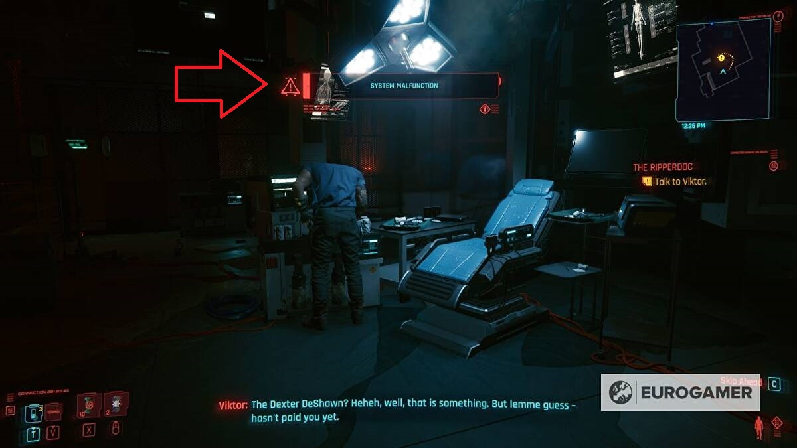
A way better look-and-feel / lore-friendly UI would probably be this one: 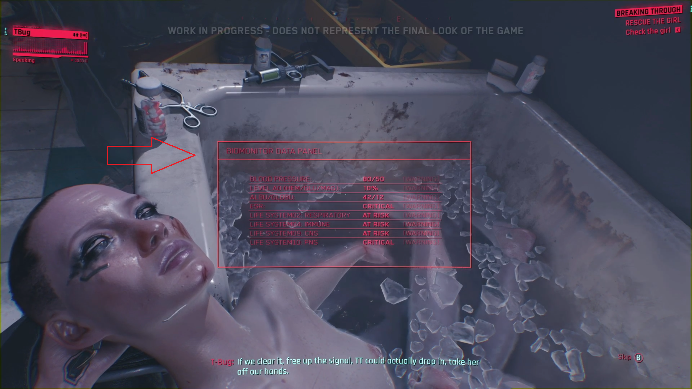
So let's browse WolvenKit Asset browser and find out where it's at:
a couple interesting ones found while searching:
- activity_log.inkwidget 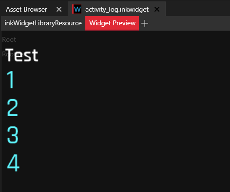
- generic_fullscreen_message_notification.inkwidget 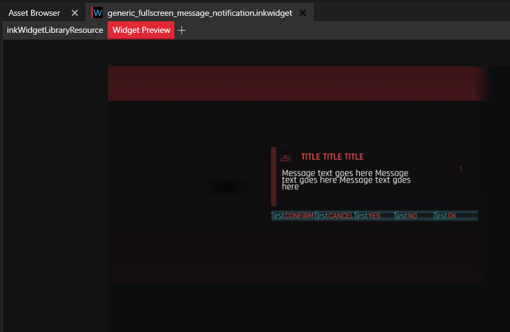
finally found out:
- q001_mission0_connect_to_girl.inkwidget 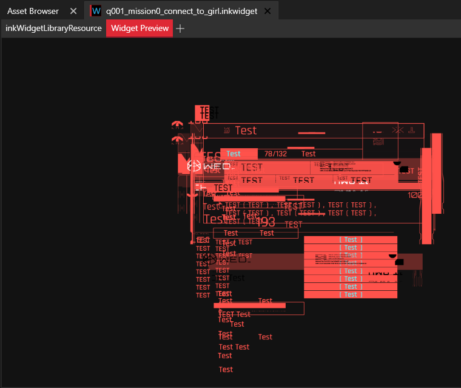
- q001_wakeup_biomoncheck.inkwidget 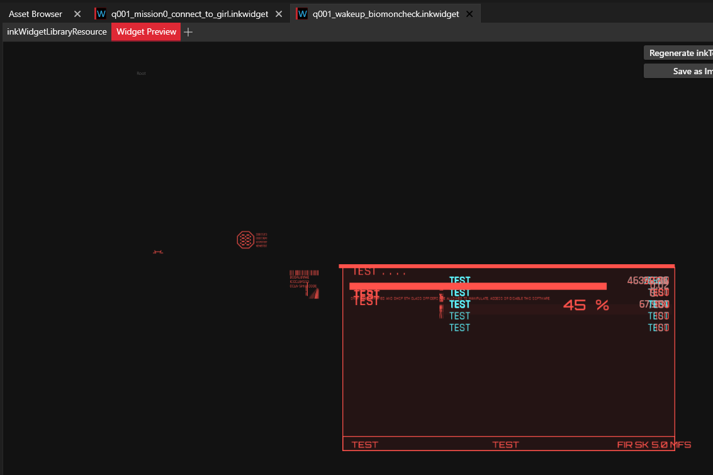
Then, where is it used in the code ?
Well haha, trickier.
- no relevant reference to
q001 - points at
DeviceBase - open many rabbit holes
So maybe inkWidgetLibraryResource from WKit ?
Hey, results seem much better !
gameuiTooltipsManagerATooltipDataInteractionsHubGameController
Also, DJ_Kovrik to the rescue:
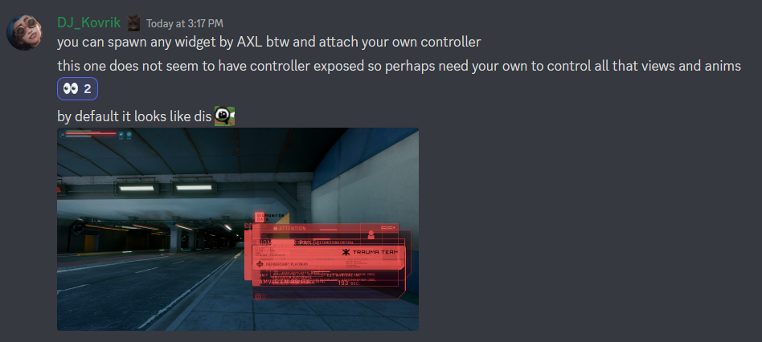
Which also brought me to:
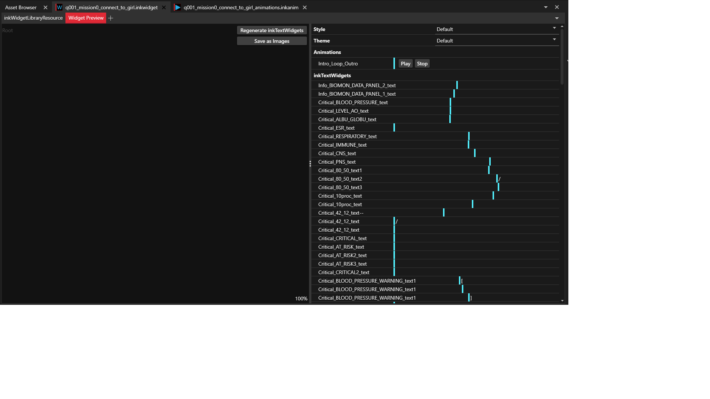
My guess so far is that the closest inkGameController to what I need is the inkHUDGameController,
except that I'll need only one inkAnimProxy, the one returned from calling PlayLibraryAnimation.
But turns out it wasn't the full solution, see the follow-up.
2023-01-31
Research on UI: follow-up
So after many failed attempts, here's the complete solution:
First it happens that q001_mission0_connect_to_girl.inkwidget and its counterpart q001_mission0_connect_to_girl_animations.inkanim actually contains markers. These markers are named timeframes, useful to play only part(s) of the whole sequence.
Of course the .inkwidget contains the graphic UI component, like in a web frontend. The .inkanim contains 2 arrays fields containing:
- in
definitions: the effects (or interpolations) to play - in
targets: the path to a nested child in the widget treeliterally the path:
[0,1,0,7]would be the child at index 0, his child at index 1, so on and so forth...
These arrays both match: the engine probably apply to target the definition of the interpolations, one after another till done.
It can be verified by exporting the .inkanim to JSON and searching for markerName.
Here's how it looks like in WolvenKit:
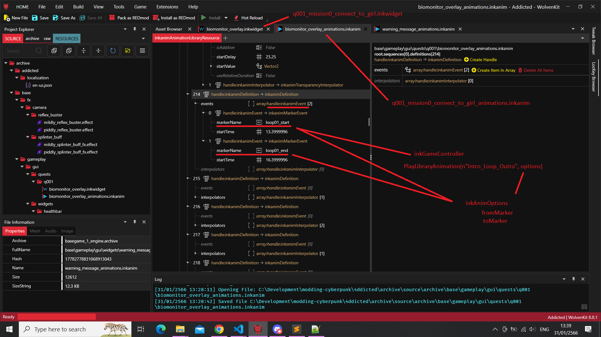
But for this particular anim, there's only 2 markers: loop01_start and loop01_end,
which I assume correspond to the moment where it loops while the game wait for the player to choose his/her next action.

Well, a solution is again to clone the .inkwidget and .inkanim files, and rename them to one's liking.
Then, the trick is to export .inkanim to JSON, open it in your favorite IDE, copy entry with the markerName, paste it at the end of the array and edit it by adding as many marker names and start time as needed. Once done, don't forget to convert from JSON back.
But both arrays definitions and targets sizes have to match: go to target, copy the entry at the same index as in definitions and paste it at the end of array using the same process as previously.
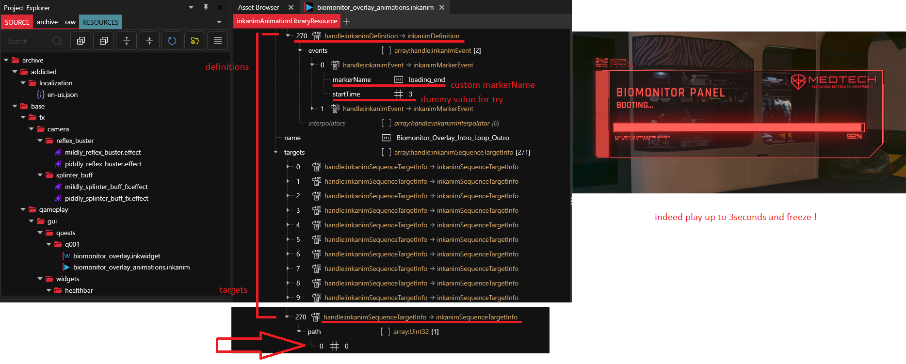
// or import cp2077-codeware library instead
// required for compilation
@addField(inkWidget)
native let parentWidget: wref<inkWidget>;
// Spawn the widget on load
@wrapMethod(NameplateVisualsLogicController)
protected cb func OnInitialize() -> Bool {
wrappedMethod();
let root = this.GetRootCompoundWidget().parentWidget.parentWidget.parentWidget;
// this line takes care of instantiating our inkWidget and attach it our inkGameController below
this.SpawnFromExternal(root, r"base\\gameplay\\gui\\quests\\q001\\biomonitor_overlay.inkwidget", n"Root:MyController");
}
// Custom controller with your logic
public class MyController extends inkGameController {
protected cb func OnInitialize() {
// conveniently, PlayLibraryAnimation accepts an optional inkAnimOptions
let options: inkAnimOptions;
// with properties like fromMarker, toMarker, and more
options.toMarker = n"loading_end"; // my custom marker
let root: ref<inkCompoundWidget> = this.GetRootWidget() as inkCompoundWidget;
let panel = root.GetWidget(n"main_canvas/Booting_Info_Critica_Mask_Canvas/Booting_Info_Critical_Canvas/Booting_Screen/BIOMONITOR_DATA_PANEL_text") as inkText;
let booting = root.GetWidget(n"main_canvas/Booting_Info_Critica_Mask_Canvas/Booting_Info_Critical_Canvas/Booting_Screen/BOOTING_Text") as inkText;
panel.SetText("HELLO WORLD");
booting.SetText("HELLO WORLD");
// custom .inkAnim name to target our modified version with custom markers
this.PlayLibraryAnimation(n"Biomonitor_Overlay_Intro_Loop_Outro", options);
}
}
and boom !
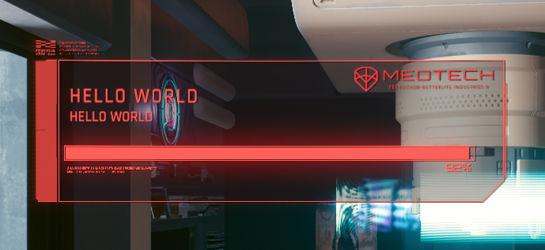
Nice :)
Some additional informations in follow-up.
credits
psiberxDJ_Kovrik
2023-02-03
Research on tweaking .inkwidget and .inkanim
super useful quote from psiberx:
you're editing
packageData, so you have two options: 1 - move your changes topackage, and nukepackageDatafor future convenience 2 - use async widget spawning
note: async widget spawning ➡️ inkGameController.AsyncSpawnFromExternal() (see cyberdoc)
So all in all, what did I have to do ?
- take .inkwidget and .inkanim and understand how they relate.
- take the whole animation and determine its key positions, at least roughly.
- clone both .inkwidget, .inkanim, rename them, and point .inkwidget to cloned .inkanim (its
animationLibraryResRef). - creating a new
definitionwith customevents:markerNameandstartDelay. also creating its counterpart intargets(path = [0]). - handle animations played automatically, or container using multiple text widget for the same sentence:
- removing
inkHorizontalPanels in .inkwidget, nested deep down underCritical_Screen_Text_Canvas/inkVerticalPanelWidget7/inkHorizontalPanelWidget2. - swap them with mere
inkText(since on the summary values displayed like78 / 45use oneinkTextfor each part:78///48). - fix the animations pointing at deleted
inkHorizontalPanels children and point to the newinkTextinstead. - also as a side note the original widgets sometimes have their
logicControllerfield set, to play animation on them automatically, which is not what you want when you are going to set the text dynamically.
- removing
- fix a couple of inconsistencies, because every once in a while some siblings widgets would have the same
CName. makes you wonder why theinkTextat the correct path is eithernullor nothing gets updated on screen (e.g.Blood_HPanel). - play biomonitor sounds.
Honestly if I had a (couple of ?) week(s ?) to allocate to this, I'd probably rewrite the widget and its animations from scratch. I'd reuse all the assets from the original .inkwidget, simplify its widgets tree, then split the .inkanim into reusable chunks of animation. I'd probably store all the key positions of all the main frame and design the whole thing to be able to get played chained, separately or be able to jump from non-consecutive segments.
2023-02-04
Learning about the different kind of ink game controllers
credits from psiberx:
inkGameController has a ref to library
inkLogicController has a ref to game controller (kind of)
what controller can spawn is defined by the library:
- library items defined in the library itself
- library items from external libs that are listed in the special section
and later on added:
inkGameController connects widget library item to ink layer / window, it provides access to game instance, library animations, sounds (can be attached to a library item)
inkLogicController is a lightweight controller that doesn't > have access to game or resources functions (can be attached > to any widget)
those are fundamental, others derive from them
What I discovered way later is that for example texts in biomonitor's chemicals report (the one which displays for Sandra Dorset: hydroxyzine, tramadol, bupropion, etc) are animated with an inkLogicController which manages an inkAnimTextValueProgress (a.k.a inkanimTextValueProgressInterpolator in the natives) to animate the text's value over time.
Informations about inkMask
Some inks cannot be created and run in scripts, as for example inkMask.
So there's no point in e.g. rebuilding Sandra's Rescue .inkwidget from scratch in code since it uses a lot of them.
One can reuse the .inkwidget as-is, and just redefine the animations.
Or rebuild the .inkwidget partially in code, by still leveraging inkMask from the source, to some extend as stated by psiberx (which I have no idea up to which extend).
🆕 2023/03/31: Codeware might now allow it.
2023-02-06
Research for BlackLace gameplay mechanics
BlackLace
Cyberpunk RED
Cost per Dose: 50eb (Costly)
Primary Effect
• Lasts 24 Hours. • User takes 2d6 Humanity Loss upon taking a dose, which is returned if the user isn't affected by Black Lace's Secondary Effect. • For the duration of the Primary Effect, the user ignores the effects of the Seriously Wounded Wound State.
Black Lace's Secondary Effect.
• Humanity Loss from Primary Effect isn't returned. • If the user wasn't already addicted to Black Lace, they are now. While addicted, unless the user is currently experiencing the Primary Effect of Black Lace, their REF is lowered by 2 points.
Drugs core rules
When you are dosed with one of these drugs, you are automatically affected by the drug's Primary Effect. When the Primary Effect of the drug wears off at the end of its duration, you roll WILL + Resist Torture/ Drugs + 1d10 against the DV of the drug's Secondary Effect, which are permanent and habit forming until you receive therapy for addiction. Taking multiple doses of a drug extends the primary effect of a drug by its full duration.
Cyberpunk Fandom
Using Black Lace will increase Armor by 10 for 30 seconds.
Black Lace is a drug that increases adrenaline and endorphins levels up to the point that one is almost incapable of feeling pain. The trip is so intense that it verges on cyberpsychosis. Corporations handed it out to their forces during the Corporate Wars. Cyberpsychos are heavy consumers of the drug. Vaporizing the drug instead of swallowing it lessens the aftereffects, without compromising the trip.
Alias: s-keef Rarity: Rare
Internet browsing
Adrenaline
Adrenaline, also known as epinephrine, is a hormone and medication which is involved in regulating visceral functions (e.g., respiration). It appears as a white microcrystalline granule. Adrenaline is normally produced by the adrenal glands and by a small number of neurons in the medulla oblongata.
It plays an essential role in the fight-or-flight response by increasing blood flow to muscles, heart output by acting on the SA node, pupil dilation response, and blood sugar level. It does this by binding to alpha and beta receptors. It is found in many animals, including humans, and some single-celled organisms. It has also been isolated from the plant Scoparia dulcis found in Northern Vietnam.
Endorphins
Endorphins (contracted from endogenous morphine) are chemical signals in the brain that block the perception of pain and increase feelings of wellbeing. They are produced and stored in an area of the brain known as the pituitary gland.
Endorphins are released when your body feels pain or stress. Your body releases endorphins to help you survive. When you feel pain, nerves in your body send pain signals to your brain. Your brain releases endorphins to block the nerve cells that receive the pain signals.
This essentially turns off your pain. It helps you to continue functioning, even in painful or stressful situations. Because you naturally seek to avoid pain, you’re more likely to do something if it makes you feel good.
Lack of endorphin
People with a lack of endorphins may show signs of depression. This is because of a lack of dopamine. Other effects of endorphin deficiency can include: Fibromyalgia: a condition that causes chronic pain throughout your body.
Fibromyalgia
Fibromyalgia is a disorder characterized by widespread musculoskeletal pain accompanied by fatigue, sleep, memory and mood issues. Researchers believe that fibromyalgia amplifies painful sensations by affecting the way your brain and spinal cord process painful and nonpainful signals.
Research : handle potential UI inconsistencies
Fact is, player can keep interacting with everything around, pause game, or even browse the various menus (inventory, character, etc).
So how to track this ?
It's probably related in one way or another to the game controllers (e.g. TimeskipGameController).
Here's a quick and probably incomplete list:
- MainMenuGameController
- MiniGameControllerAdvanced / MiniGamePlayerController
- inkHUDGameController -> ShowRequest / HideRequest
- attention: e.g. TimeskipGameController just extends inkGameController !
- NetworkInkGameController
- BrowserGameController
- ControlledDevicesInkGameController ?
- SceneScreenGameController ?
- HoldIndicatorGameController ?
- TutorialMainController
- FastTravelGameController
- BaseHubMenuController ?
- PauseMenuBackgroundGameController / PauseMenuGameController
- CodexPopupGameController
- gameuiPhotoModeMenuController
- BoothModeGameController
- TarotPreviewGameController
- BaseModalListPopupGameController
- VendorSellJunkPopup
- CpoHudRootGameController seems unrelated as it's talking about multi and assets cannot be found in WK
multi like 'multiplayer' ?
On opening some UI, the biomonitor animation should just be dismissed (e.g. whenever time passes, like when skipping time / going to sleep, if confirmed).
On opening other UI, the biomonitor animation should just pause (e.g. whenever in inventory or any of the other siblings menus), and resume when back in-game.
Research : create a custom interaction with player
Like the one where you have to quick take a decision (the UI with the decreasing bar and the button to take action). Which classes could provide this feature ?
- gameinteractionsReactionState
- gameinteractionsChoiceType
- EFocusForcedHighlightType
- gamedataMappinVariant
- EQuestVehicleDoorState.DisableAllInteractions
- EDrillMachineRewireState.OutsideInteractionRange
- EDPadSlot.InteractionWheel
- InteractionManager
- InteractionChoiceCaptionPart
- InteractionChoice
- InteractionBaseEvent
- InteractionComponent.SetSingleChoice
- InteractionActivationEvent
- InteractionChoiceEvent
- InteractionScriptedCondition (e.g. DeviceRemoteInteractionCondition)
this.m_DPadWheelInterationStartedBBID = this.m_UiQuickItemsBlackboard.RegisterDelayedListenerVariant(this.m_UiQuickSlotDef.WheelInteractionStarted, this, n"OnWheelInteractionStarted");
this.m_DPadWheelInterationEndedBBID = this.m_UiQuickItemsBlackboard.RegisterDelayedListenerVariant(this.m_UiQuickSlotDef.WheelInteractionEnded, this, n"OnWheelInteractionEnded");
this.m_interactionBlackboardId = this.m_bbUIData.RegisterListenerVariant(GetAllBlackboardDefs().UIGameData.InteractionData, this, n"OnInteractionStateChange");
protected cb func OnInteractionStateChange(value: Variant) -> Bool {
let interactionData: bbUIInteractionData = FromVariant<bbUIInteractionData>(value);
this.m_interactionDeviceState = interactionData.terminalInteractionActive;
this.UpdateIsInteractingWithDevice();
}
this.m_bbDefinition = GetAllBlackboardDefs().UIInteractions;
this.m_dataListenerId = this.m_blackboard.RegisterDelayedListenerVariant(this.m_bbDefinition.LootData, this, n"OnUpdateData");
// https://jac3km4.github.io/cyberdoc/#17638 => UIInteractionsDef
// InteractionChoiceHub: BlackboardID_Variant
// DialogChoiceHubs: BlackboardID_Variant
// LootData: BlackboardID_Variant
// ContactsData: BlackboardID_Variant
// ActiveChoiceHubID: BlackboardID_Int
// SelectedIndex: BlackboardID_Int
// ActiveInteractions: BlackboardID_Variant
// InteractionSkillCheckHub: BlackboardID_Variant
// NameplateOwnerID: BlackboardID_EntityID
// VisualizersInfo: BlackboardID_Variant
// ShouldHideClampedMappins: BlackboardID_Bool
// LastAttemptedChoice: BlackboardID_Variant
// LookAtTargetVisualizerID: BlackboardID_Int
// HasScrollableInteraction: BlackboardID_Bool
Actually there's a lot of things to look at in blackboardDefinitions.swift.
- PlayerStateMachineDef
- IsInteractingWithDevice
- IsInteractingViaPersonalLink
- IsUploadingQuickHack
- DisplayDeathMenu
- IsInWorkspot
- IsInLoreAnimationScene
- UI_SystemDef
- IsInMenu
- UIGameDataDef
- Popup_IsModal
- Popup_IsShown
- IsBriefingActive
- UIInteractionsDef
- ActiveInteractions
- UI_ActiveVehicleDataDef
- IsPlayerMounted
- VehicleDef
- IsUIActive
- BraindanceBlackboardDef
- IsActive
- UI_PlayerBioMonitorDef
- AdrenalineBar
- FastTRavelSystemDef
- FastTravelStarted
- DeviceBaseBlackboardDef
- UI_InteractivityBlocked
- MenuEventBlackboardDef
- MenuEventToTrigger
- UI_ComDeviceDef
- isDisplayingMessage
- HUDManagerDef
- ShowHudHintMessege
- UI_HUDProgressBarDef
- Active
- UI_QuickSlotsDataDef
- WheelInteractionStarted
- WheelInteractionEnded
- UIRadialContextRequest
- quickhackPanelOpen
- PhotoModeDef
- Active
Wow, that's a lot to investigate !
And there's also gamedataStatType that I would like to look further out.
Here are also a few samples from the sources:
from PlayerPuppet
protected cb func OnDeath(evt: ref<gameDeathEvent>) -> Bool {
this.ForceCloseRadialWheel();
StatusEffectHelper.ApplyStatusEffect(this, t"GameplayRestriction.BlockAllHubMenu");
super.OnDeath(evt);
GameInstance.GetTelemetrySystem(this.GetGame()).LogPlayerDeathEvent(evt);
}
from DefaultTransition
protected final const func IsPlayerInAnyMenu(const scriptInterface: ref<StateGameScriptInterface>) -> Bool {
let blackboard: ref<IBlackboard> = scriptInterface.GetBlackboardSystem().Get(GetAllBlackboardDefs().UI_System);
let uiSystemBB: ref<UI_SystemDef> = GetAllBlackboardDefs().UI_System;
return blackboard.GetBool(uiSystemBB.IsInMenu);
}
protected final const func IsQuickHackPanelOpened(const scriptInterface: ref<StateGameScriptInterface>) -> Bool {
let bb: ref<IBlackboard> = scriptInterface.GetBlackboardSystem().Get(GetAllBlackboardDefs().UI_QuickSlotsData);
return bb.GetBool(GetAllBlackboardDefs().UI_QuickSlotsData.quickhackPanelOpen);
}
protected final const func IsRadialWheelOpen(const scriptInterface: ref<StateGameScriptInterface>) -> Bool {
let bb: ref<IBlackboard> = scriptInterface.GetBlackboardSystem().Get(GetAllBlackboardDefs().UI_QuickSlotsData);
return bb.GetBool(GetAllBlackboardDefs().UI_QuickSlotsData.UIRadialContextRequest);
}
MovePoliciesComponent
public final native func IsInIdle() -> Bool;
HUDManager
private final func RegisterHackingMinigameCallback() -> Void {
let blackboard: ref<IBlackboard> = GameInstance.GetBlackboardSystem(this.GetGameInstance()).Get(GetAllBlackboardDefs().NetworkBlackboard);
if IsDefined(blackboard) && !IsDefined(this.m_hackingMinigameCallbackID) {
this.m_hackingMinigameCallbackID = GameInstance.GetBlackboardSystem(this.GetGameInstance()).Get(GetAllBlackboardDefs().NetworkBlackboard).RegisterListenerString(GetAllBlackboardDefs().NetworkBlackboard.NetworkName, this, n"OnBreachingNetwork");
};
}
AttackData
public final static func IsPlayerInCombat(attackData: ref<AttackData>) -> Bool {
let psmBB: ref<IBlackboard> = GameInstance.GetBlackboardSystem(GetGameInstance()).GetLocalInstanced(attackData.GetInstigator().GetEntityID(), GetAllBlackboardDefs().PlayerStateMachine);
let combatState: Int32 = psmBB.GetInt(GetAllBlackboardDefs().PlayerStateMachine.Combat);
return combatState == EnumInt(gamePSMCombat.InCombat);
}
ArcadeMachineController
protected final const func IsPlayerInteractingWithDevice() -> Bool {
let playerStateMachineBlackboard: ref<IBlackboard> = GameInstance.GetBlackboardSystem(this.GetGameInstance()).GetLocalInstanced(this.GetPlayerEntityID(), GetAllBlackboardDefs().PlayerStateMachine);
return playerStateMachineBlackboard.GetBool(GetAllBlackboardDefs().PlayerStateMachine.IsInteractingWithDevice);
}
2023-02-07
Research on radial wheel
Ideally, I would like to hide the addiction-related debuffs to the player, unless V is equipped with a biomonitor.
Looking at a way to conditionally display status effects entries on top-left of the RadialWheelController, browsing the sources one will probably stumble upon:
UI_PlayerBioMonitorDeffrom the blackboard definitions, which has aBuffsListandDebuffsListto cache the status effects.- this cache is
Variant, and containsBuffInfoentries. inkCooldownGameControlleruses this cache for display- its method
RequestCooldownVisualizationis called fromSingleCooldownManagerinActivateCooldown: all these take care of preparing the ink texts and icons to display.
- its method
- and eventually
buffListGameControlleris in charge of updating the buffs / debuffs lists.
2023-02-10
Play successive sounds directly defined with TweakXL
Let's imagine we want a migraine status effect which would last for 15 minutes, while playing a looping SFX for the first 10 seconds, then a fade out SFX for the next 25 seconds and stop. Here's how to quickly roll it:
credits to RMK on Discord for pointing out Prereqs.DurationPrereq !
# this effector kicks in first and play first sound
Effectors.MigraineStart:
$type: Effector_Record
effectorClassName: PlaySFXEffector
activationSFXName: q101_sc_03_heart_loop
# 10 seconds after, this effector switch first sound being played for second one
Effectors.MigraineDecrease:
$type: Effector_Record
effectorClassName: StopAndPlaySFXEffector
sfxToStop: q101_sc_03_heart_loop
sfxToStart: q004_sc_04a_heartbeat_rev
prereqRecord:
$base: Prereqs.DurationPrereq
duration: 10
randRange: 0
# 25 seconds after, this effector stop second sound
Effectors.MigraineEnd:
$type: Effector_Record
effectorClassName: StopSFXEffector
sfxName: q004_sc_04a_heartbeat_rev
prereqRecord:
$base: Prereqs.DurationPrereq
duration: 25
randRange: 0
# effect last for 15 minutes (900 seconds)
BaseStatusEffect.Migraine:
$type: StatusEffect_Record
duration:
$type: StatModifierGroup_Record
drawBasedOnStatType: false
statModifiers:
- $type: ConstantStatModifier_Record
modifierType: Additive
statType: BaseStats.MaxDuration
value: 900
statModsLimit: -1
statModsLimitModifier: None
packages:
- $type: GameplayLogicPackage_Record
stats:
- $type: ConstantStatModifier_Record
modifierType: Multiplier
statType: BaseStats.Memory
value: 0.7
- $type: GameplayLogicPackage_Record
effectors: [Effectors.MigraineStart, Effectors.MigraineDecrease, Effectors.MigraineEnd]
uiData:
$base: UIData.WithdrawnFromMemoryBooster
intValues: [70]
Create interaction for biomonitor dismissal
All credits to: keanuWheeze on Discord
Create simple interaction:
local function createInteraction(action, title)
local choiceData = InteractionChoiceData.new()
choiceData.localizedName = title
choiceData.inputAction = action
local choiceType = ChoiceTypeWrapper.new()
choiceData.type = choiceType
return choiceData
end
local function createInteractionHub()
local choiceHubData = InteractionChoiceHubData.new()
choiceHubData.id = -1001
choiceHubData.active = true
choiceHubData.flags = EVisualizerDefinitionFlags.Undefined
choiceHubData.title = 'Test Interaction Hub'
local choices = {}
table.insert(choices, createInteraction('Choice1', 'Blow up the sky'))
choiceHubData.choices = choices
return choiceHubData
end
local function prepareVisualizersInfo(hub)
local visualizersInfo = VisualizersInfo.new()
visualizersInfo.activeVisId = hub.id
visualizersInfo.visIds = { hub.id }
return visualizersInfo
end
registerHotkey('TestInteractions', 'TestInteractions', function()
local interactionHub = createInteractionHub()
local visualizersInfo = prepareVisualizersInfo(interactionHub)
local blackboardDefs = Game.GetAllBlackboardDefs()
local interactionBB = Game.GetBlackboardSystem():Get(blackboardDefs.UIInteractions)
interactionBB:SetVariant(blackboardDefs.UIInteractions.InteractionChoiceHub, ToVariant(interactionHub), true)
interactionBB:SetVariant(blackboardDefs.UIInteractions.VisualizersInfo, ToVariant(visualizersInfo), true)
end)
Create proper dialog interaction:
local interactionUI = require("interactionUI")
registerForEvent("onInit", function()
interactionUI.init()
end)
registerForEvent("onUpdate", function()
interactionUI.update()
end)
registerHotkey("customDialog", "Show Dialog", function()
-- Setup choices
local choice1 = interactionUI.createChoice("Choice 1", TweakDBInterface.GetChoiceCaptionIconPartRecord("ChoiceCaptionParts.ShowerIcon"), gameinteractionsChoiceType.QuestImportant) -- Icon and choiceType are optional
local choice2 = interactionUI.createChoice("Choice 2", TweakDBInterface.GetChoiceCaptionIconPartRecord("ChoiceCaptionParts.SitIcon"), gameinteractionsChoiceType.AlreadyRead)
local choice3 = interactionUI.createChoice("Choice 3", TweakDBInterface.GetChoiceCaptionIconPartRecord("ChoiceCaptionParts.WaitIcon"), gameinteractionsChoiceType.Selected)
-- Setup, set and show hub
local hub = interactionUI.createHub("Hub Name", {choice1, choice2, choice3}) -- Create hub and give it the list of choices
interactionUI.setupHub(hub) -- Set the hub
interactionUI.showHub() -- Show the previously set hub
-- Setup callbacks
interactionUI.callbacks[1] = function()
print("Choice 1 used")
end
interactionUI.callbacks[2] = function()
print("Choice 2 used")
end
interactionUI.callbacks[3] = function()
print("Choice 3 used")
interactionUI.hideHub() -- Hide the dialog
end
end)
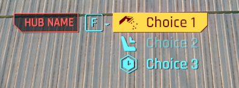
AI powered dialogs research
-
very important to have extra word at the beginning (ideally numbers, as it helps order the audio tracks)
-
turn xVASynth sample rate to 44100 (check ffmpeg first)
-
in 2.3.0, male V sounds metallic out of the box, that's just like that: applying a gate helps somewhat but is not perfect.
-
recording one's voice and importing in xVASynth can help with the phonetic for a better pronunciation.
it might be worth having a look at ElevenLabs (TBC: train models ?).
it might be worth trying other vocoders too.
credits: thanks to bespokecomp on Github for helping out
customSounds
Custom sounds can be added to the game with REDmod.
-
unrelated to Pack as REDmod or Pack, both works
.archive and customSounds are distinct
-
if mod was both Packed and Packed as REDmod, files under
archive/pc/mod(ArchiveXL) takes precedence over files inmods(REDmod). 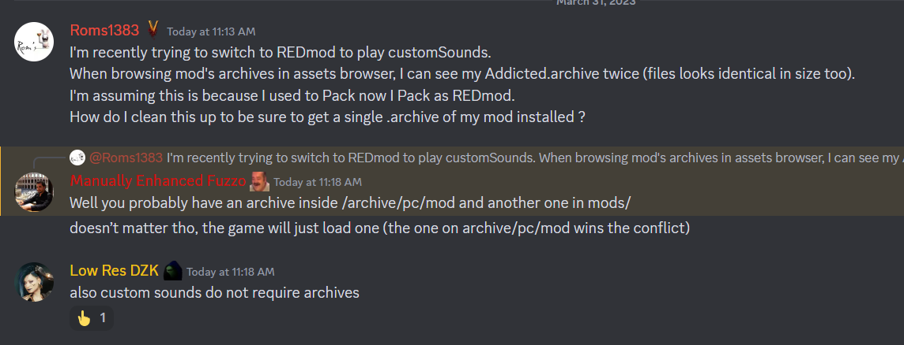 -
must be copied over into:
{install}/mods/{my-mod}/customSounds(all your .wav){install}/mods/{my-mod}/info.json
-
requires run
deployon REDmod cli whenever changed REDmod cli can be found in game's files{install}/tools/redmod/bin/redMod.exe(seedeploycommand in justfile) -
requires game settings:
-modded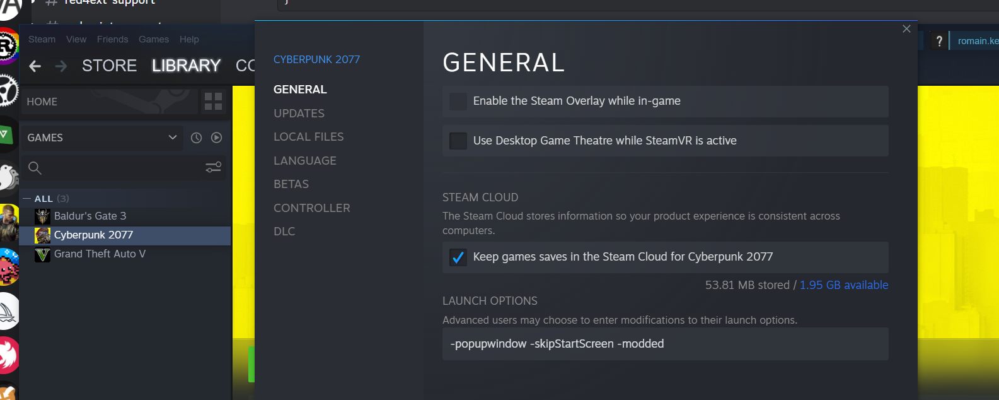
encoding
.wav works in 44100Hz 16bits mono (pcm_s16le in ffmpeg).
🆕 actually I made a further experiment using ww2ogg and ffprobe to extract the infos from vanilla audio files.
vanilla .wav suggests 48000Hz 16bits mono.
analyze with ffprobe
$ just analyze C:\\Development\\modding-cyberpunk\\4ddicted\\archive\\source\\archive\\base\\localization\\common\\vo\\civ_mid_m_85_mex_30_mt_vista_del_rey_f_1ed3f72f92559000.wem
ffprobe -i 'C:\Development\modding-cyberpunk\4ddicted\archive\source\archive\base\localization\common\vo\civ_mid_m_85_mex_30_mt_vista_del_rey_f_1ed3f72f92559000.wem' -show_format
ffprobe version 6.0-essentials_build-www.gyan.dev Copyright (c) 2007-2023 the FFmpeg developers
built with gcc 12.2.0 (Rev10, Built by MSYS2 project)
configuration: --enable-gpl --enable-version3 --enable-static --disable-w32threads --disable-autodetect --enable-fontconfig --enable-iconv --enable-gnutls --enable-libxml2 --enable-gmp --enable-lzma --enable-zlib --enable-libsrt --enable-libssh --enable-libzmq --enable-avisynth --enable-sdl2 --enable-libwebp --enable-libx264 --enable-libx265 --enable-libxvid --enable-libaom --enable-libopenjpeg --enable-libvpx --enable-libass --enable-libfreetype --enable-libfribidi --enable-libvidstab --enable-libvmaf --enable-libzimg --enable-amf --enable-cuda-llvm --enable-cuvid --enable-ffnvcodec --enable-nvdec --enable-nvenc --enable-d3d11va --enable-dxva2 --enable-libmfx --enable-libgme --enable-libopenmpt --enable-libopencore-amrwb --enable-libmp3lame --enable-libtheora --enable-libvo-amrwbenc --enable-libgsm --enable-libopencore-amrnb --enable-libopus --enable-libspeex --enable-libvorbis --enable-librubberband
libavutil 58. 2.100 / 58. 2.100
libavcodec 60. 3.100 / 60. 3.100
libavformat 60. 3.100 / 60. 3.100
libavdevice 60. 1.100 / 60. 1.100
libavfilter 9. 3.100 / 9. 3.100
libswscale 7. 1.100 / 7. 1.100
libswresample 4. 10.100 / 4. 10.100
libpostproc 57. 1.100 / 57. 1.100
[wav @ 0000023cb642ebc0] Estimating duration from bitrate, this may be inaccurate
[wav @ 0000023cb642ebc0] Could not find codec parameters for stream 0 (Audio: none ([255][255][0][0] / 0xFFFF), 48000 Hz,
1 channels, 103 kb/s): unknown codec
Consider increasing the value for the 'analyzeduration' (0) and 'probesize' (5000000) options
Input #0, wav, from 'C:\Development\modding-cyberpunk\4ddicted\archive\source\archive\base\localization\common\vo\civ_mid_m_85_mex_30_mt_vista_del_rey_f_1ed3f72f92559000.wem':
Duration: 00:00:05.94, bitrate: 103 kb/s
Stream #0:0: Audio: none ([255][255][0][0] / 0xFFFF), 48000 Hz, 1 channels, 103 kb/s
Unsupported codec with id 0 for input stream 0
[FORMAT]
filename=C:\Development\modding-cyberpunk\4ddicted\archive\source\archive\base\localization\common\vo\civ_mid_m_85_mex_30_mt_vista_del_rey_f_1ed3f72f92559000.wem
nb_streams=1
nb_programs=0
format_name=wav
format_long_name=WAV / WAVE (Waveform Audio)
start_time=N/A
duration=5.937938
size=76925
bit_rate=103638
probe_score=99
[/FORMAT]
packaging
it's perfectly fine to Pack normally in WolvenKit, while still using REDmod for custom sounds on the side.
The following warnings on Pack .archive can safely be ignored. REDmod will still load the custom sounds if found in the game files, as previously mentioned.
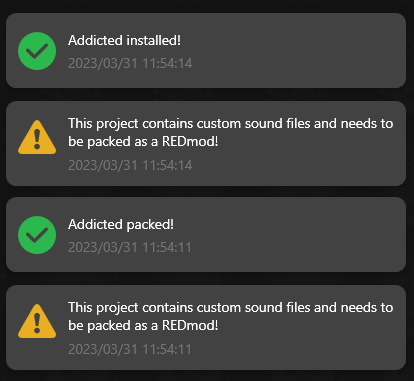
translations
files in customSounds can perfectly be nested in subdirectories,
allowing (separate mods included) to prepare voices for translations,
under e.g. en-us/.
localization
Codeware also provides LocalizationSystem to easily handle translations of any kind: voice, subtitle, etc.
credits to people at Discord, especially @Manually Enhanced Fuzzo, @IslandDancer
credits to @bespokecomp on Github
Provide a translation for this mod
So how to translate this mod ?
🆕 2024/01/03: translations for this mod are now provided along audio files in Audioware, so the process described below is quite outdated: please contact me directly if you want to make a translation for Addicted.
Before we start I assume that you:
- have an account on Github
- know how to use both Git and Github
- forked this repo
- created a new branch
e.g. for French
translate/fr-fr - made your changes over there
- opened a pull request once finished (or a draft pull request if it's not but you would like to review it together first).
Onscreens
⚙️ ArchiveXL
The first file to translate is archive/source/raw/addicted/localization/en-us.json.json.
contains all the native texts displayed in UI.
- duplicate it alongside and name it by your locale (available locales can be found there).
- e.g. for French, rename it into:
fr-fr.json.json. - filename contains
.jsontwice when exported from WolvenKit, leave it this way.
- e.g. for French, rename it into:
- translate every
femaleVariantinto your own language:- if your language has gender-based variants, do not omit to translate
maleVarianttoo. - when the sentence is not gender-based, simply specify
femaleVariantand letmaleVariantempty (femaleVariantis the default fallback whenmaleVariantis left unspecified).
- if your language has gender-based variants, do not omit to translate
Then, update archive/source/resources/Addicted.archive.xl to add the file you previously created.
e.g. for French:
localization:
onscreens:
en-us: addicted\localization\en-us.json
fr-fr: addicted\localization\fr-fr.json # add this line
Subtitles
⚙️ Codeware
The second file to translate is located under scripts/Addicted/i18n/English.reds.
contains all the subtitles for voiced dialog lines.
⚠️ you only need to translate the rightmost part of this.Subtitle(...), leaving the leftmost untouched.
Also rename the class by your own language.
e.g. for French:
module Addicted.Localization
import Codeware.Localization.*
public class French extends ModLocalizationPackage {
protected func DefineSubtitles() -> Void {
// snake case suffixes must match entries in info.json (custom sounds)
this.Subtitle("Addicted-Voice-Subtitle-biomon", "Biomon...");
this.Subtitle("Addicted-Voice-Subtitle-as_if_I_didnt_know_already", "Comme si j'étais pas au courant...");
// so on and so forth ...
}
}
Vanilla voices
⚒️ WolvenKit ⚙️ REDmod
In the next steps we're gonna re-export some vanilla voices used.
this mod also reuse vanilla voiced dialog lines.
- open WolvenKit
- locate each
.wemfile found under archive/source/customSounds/vanilla/en-us by its name (minus.Wav) in WolvenKit's Assets browser - export them all with WolvenKit's Export tool (do not forget to set export settings to
Wavfor each file) under subfolder in archive/source/customSounds/vanilla, named after your own language.- e.g. for French in
archive/source/customSounds/vanilla/fr-fr
- e.g. for French in
AI-generated custom voices
⚒️ WolvenKit + ElevenLabs ⚙️ REDmod
In the next steps we're gonna train ElevenLabs with a specific set of vanilla voices, then generate dialog for each of the subtitles previously translated.
💡 I'm aware that you might not be willing to get an account on ElevenLabs so you can also zip me all the files below once exported and let me do it on your behalf.
The custom dialog lines to translate are located under archive/source/customSounds/en-us.
contains all the voiced custom dialog lines.
There's one folder for each of the "mood" that V might be into:
-
disheartened: these samples are used when biomonitor already reported serious addiction symptoms to V multiple times while V is severely addict.V can end up disheartened when biomonitor reports his/her condition repeatedly and (s)he has clearly crossed the line.
-
offhanded: these samples are used when biomonitor already reported serious addiction symptoms to V multiple times while V is only notably addict.V can sometimes acts offhanded when biomonitor reports his/her condition but (s)he doesn't really give a damn.
-
pestered: these samples are used when biomonitor is dismissed by V while in combat.V can obviously be pestered when biomonitor unexpectedly pops up during combat.
-
surprised: these samples are used when biomonitor reports addiction symptoms to V only for a couple of times.V can be surprised when biomonitor starts showing up from time to time.
⚠️ for example, when generating sample for archive/source/customSounds/en-us/surprised/fem_v_coa_03.wav under archive/source/customSounds/en-us/surprised, you should regenerate in ElevenLabs until you get the sentence pronounced as if V was surprised. Not doing so defeats the purpose of adding custom voicing.
-
make sure to have an account on ElevenLabs
-
locate and export each of these
.wemas previously: ℹ️ using same exact samples set increases chances of having more "homogeneous sounding" across different languagesclick to see which ones
v_scene_aaron_mccarlson_default_f_1b6ed94ce5559000v_scene_aaron_mccarlson_default_f_1b77e03246559000v_scene_benedict_mcadams_default_f_1b1b1ce0be2c5000v_scene_claire_default_f_1b0c1373382b6000v_scene_dakota_smith_defaut_f_1ad786e65246b000v_scene_dakota_smith_defaut_f_1b30dc13f92ef000v_scene_dakota_smith_defaut_f_1936caecd649d000v_scene_dakota_smith_defaut_f_1936cf055549d000v_scene_dan_default_f_1b1bed3cac29f000v_scene_delamain_default_f_1b3f1d1f6b386000v_scene_delamain_default_f_182ac718234ea000v_scene_dex_default_f_1b2f30a75929f000v_scene_dex_default_f_182ad40c364ea000v_scene_jackie_default_f_1b2f97e30c2c5004v_scene_jackie_default_f_1b2f687cef2c5000v_scene_jackie_default_f_1b2fa81c242c5000v_scene_jackie_default_f_1b2fa2734c2c5000v_scene_jackie_default_f_1b2fae69a12c5000v_scene_jackie_default_f_1b2fb2c5892c5000v_scene_jackie_default_f_1b2fb6a25c2c5000v_scene_jackie_default_f_1b2fb479f32c5000v_scene_jackie_default_f_1b2fc8db0d2c5000v_scene_jackie_default_f_1b302c10c12c5000v_scene_wakako_okada_default_f_1b68a843092b6000v_scenes_f_1a7c32d2e947a000
-
feed them to ElevenLabs under
VoiceLabclick on+ Add voice⚠️ a premium membership is required (5$/month)- save your cloned voice, for example
Female V
- save your cloned voice, for example
-
create a folder
-
go to
Speech synthesis- select the voice previously created
- set
Voice settingsto:Stability: 35%Clarity + Similarity Enhancement: 90%
- repeat this process for each of the subtitle:
- generate
- compare it with original english version
- if it sounds good and similar in tone, save it e.g. if in the original audio V sounds disheartened, in your own language (s)he should sounds similar too, otherwise it will break player's immersion.
- do not forget to place it under the same folder structure,
- otherwise repeat the generation process.
-
repeat same process for both male and female V
-
update archive/source/resources/info.json to add one entry for each of the original one for English modified as per your locale. e.g. for French
JSON"customSounds": [ // e.g. this points to vanilla sound file { "name": "addicted.fr-fr.fem_v_ono_hhuh", "type": "mod_sfx_2d", "file": "vanilla/fr-fr/v_q113_f_1956c7fde04e1000.Wav", "gain": 1.0, "pitch": 0.0 }, // e.g. while this points to custom AI-generated file { "name": "addicted.fr-fr.fem_v_damn_thats_fucked_up", "type": "mod_sfx_2d", "file": "fr-fr/surprised/fem_v_dtfu.wav", "gain": 1.0, "pitch": 0.0 }, // more definitions ... ]